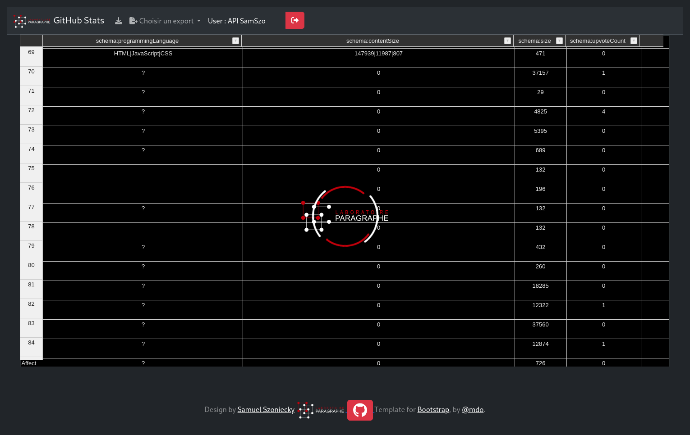
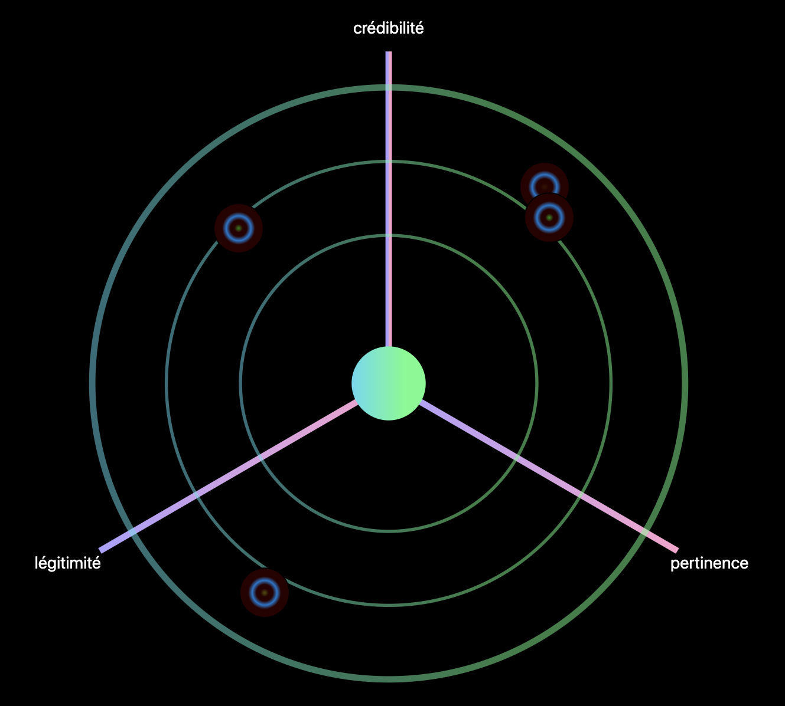

3 Remerciements
Université Vincennes – Saint-Denis Paris 8
Mémoire de synthèse en vue de l’Habilitation à diriger des recherches
Samuel Szoniecky
Jardin des connaissances
Modélisation des écosystèmes de connaissances
pour une écologie de l’information et de la communication
Garden of knowledge
Modeling knowledge ecosystems for an ecological management of information and communication
Sous le parrainage du professeur XXX
Présenté le XXX devant un jury composé de :
- XXX, examinateur
- XXX, examinateur,
- XXX, examinateur,
- XXX, examinateur,
- XXX, examinateur,
- XXX, garant & rapporteur,
4 Résumé
5 Abstract
6 Mots-clefs
7 Table des matières
8 Introduction générale** **
« La vision magique du monde
est celle d’un univers de puissances
qui, virtuelles,
ne tendent qu’à devenir actuelles. »
(Thom, 1975) p. 362
« Cette existence d’une polarité perceptive joue un rôle prépondérant dans la ségrégation des unités perceptives […]. Le sujet perçoit de manière à s’orienter par rapport au monde […]. Percevoir c’est […] organiser, maintenir ou inventer une organisation. Il ne suffit pas de dire que la perception consiste à saisir des touts organisés ; en fait, elle est l’acte qui organise des touts ; elle introduit l’organisation en reliant analogiquement les formes contenues dans le sujet aux signaux reçus : percevoir est retenir la plus grande quantité de signaux possible dans les formes les plus ancrées dans le sujet ; ce n’est pas seulement saisir des formes ou enregistrer des données multiples juxtaposées ou successives Percevoir consiste à élever l’information du système formé par le sujet et le champ dans lequel il s’oriente. […] C’est en s’orientant dans (une) situation que le sujet peut ramener à l’unité les aspects de l’hétérogénéité qualitative et intensive, opérer la synthèse du divers homogène. (Simondon Gilbert (1989), L’individuation psychique et collective, Paris, Aubier., p. 89-90) » cité par (Quéré, 2020, paragr. 66)
9
10 Cartographie d’un milieu de connaissances
« tous les systèmes de modélisation se valent,
tous sont acceptables,
mais uniquement dans la mesure où
leurs principes d’intelligibilité
renoncent à toute prétention universaliste »
(Guattari, 1989, p. 10)
La démarche auto-réflexive de ce travail commence par une description de l’état actuel de mes recherches. Elle a pour ambition un dévoilement sincère des limites de ma pensée sous la forme d’une cartographie qui trace les frontières numériques (Saleh et al., 2023) de ce qui est important pour moi aujourd’hui, c’est-à-dire la valeur des rapports que j’entretiens entre ma subjectivité (Guattari, 1989) et mon objectivité (Badiou, 2018) et qui forme mon milieu de connaissances (Berque, 2009).
Cartographier c’est à la fois explorer, formaliser et guider. Tout commence par la découverte d’un lieu, par l’expérience d’un espace dont on va ensuite décrire les impressions qu’il produit suivant des règles convenues pour que d’autres puisses les retrouver après soi-même.
Les espaces que nous décrivons sont des milieux, c’est à dire un tissu relationnel au sein duquel les connaissances existent, et sans lequel elles n’existeraient pas (Berque, 2009, p. 146). Ce sont des espaces vivants qui évoluent sans cesse et nous transforment à chaque interaction que nous entretenons avec eux. Suivant le principe d’énaction (Maturana & Varela, 1994), le couplage entre l’espace et l’auteur de sa description transforme à la fois l’espace et l’auteur. Cartographier c’est se connaître soi-même en modélisant le milieu de ses expériences et en réfléchissant aux transformations que cela produit.
Peut-on modéliser toutes ses expériences pour les rendre accessibles ? Sont-elles toutes modélisables ? Accessibles ? Même si les cartes utilisent des systèmes de coordonnées calculables et un vocabulaire formel abouti qui les rendent manipulables par des machines et donc potentiellement modélisables, il n’en reste pas moins que la cartographie procède d’une multitude de choix qui sélectionneront dans l’espace à modéliser ce qui sera effectivement dans la carte. Pour transmettre une expérience, il faut la réduire à un ensemble de signes et par la même la soumettre aux contraintes de ce qui les caractérisent : variabilité, associativité, équivocité (Deleuze, 1981a). La transformation de l’expérience en signe est fondamentalement incomplète. L’exhaustivité n’est qu’un leurre. Toutefois, la carte possède une dimension diagrammatique qui donne au signe une potentialité d’action à la manière d’une partition musicale (Stransky & Szoniecky, 2014). La carte guide vers une expérience sans décrire toutes les connaissances auxquelles l’expérimentation donnera accès. Avec une carte, je sais où trouver une rivière poissonneuse mais pas si je vais effectivement pêcher des poissons et lesquels.
Nous vous invitons à vous laisser guider par les cartographies que nous présentons en espérant que la pêche aux connaissances sera fructueuse pour vous, elle l’est déjà pour moi. Les cartographies que nous vous proposons décrivent mes connaissances en rapport avec mon métier d’enseignant chercheur et les pratiques informationnelles qu’il génère (Thiault & Malingre, 2022). Nous suivons un processus d’exploration qui commence par préciser les principes cartographique utilisés. Le second chapitre de cette partie présente l’état actuel de mes positions scientifiques dans les sciences de l’information et de la communication et plus globalement dans les sciences humaines. Nous verrons ensuite dans un troisième chapitre quelles sont mes visées scientifiques par rapport à quatre échelles d’exploration (locale, globale, sociale et conceptuelle) en suivant cinq axes de recherches :
- comprendre l’internet des objets,
- concevoir une générativité générique,
- formaliser le consensus par une éthique de la discussion,
- designer les connaissances,
- développer l’intelligence collective.
Dans un quatrième chapitre, je présenterais les étapes de mon parcours intellectuel qui débute avec l’histoire de l’art puis s’ancre dans les sciences de l’information et de la communication pour développer un projet de jardinage des connaissances qui mène à une théorisation des écosystèmes de connaissances et finalement à la mise en pratique d’une méthode de modélisation et d’analyse de l’information et de la communication. Le dernier chapitre de cette partie sera consacré à la présentation des résultats de ce parcours en matière :
- de modélisation d’une ontologie-éthique,
- de calcul de la complexité info-communicationnelle,
- d’interaction avec des cartographies sémantiques
- d’outillage pour les humanités numériques.
En explorant le milieu de connaissances que je vous propose, vous serez peut-être tenté d’y laisser vos propres traces. Si c’est le cas, vous pourrez le faire en utilisant l’outil « CartoAffect » que j’ai développé pour cartographier mon milieu de connaissances. Il suffit de vous rendre à cette page Web et/ou de télécharger l’application mobile. Une fois que vous vous serez identifié avec le compte qui vous a été fourni, vous pourrez participer à la cartographie d’un milieu de connaissances. Bonne exploration.
10.1 Principes de cartographie des connaissances
Les principes de cartographie des connaissances que nous utilisons s’appuient sur des idées inspirées de nombreuses références (1.2 Positionnements p. 36) à partir desquels nous concevons un design des connaissances et définissons des propriétés graphiques. Il va de soi, que d’autres références définiraient d’autres designs et d’autres propriétés graphiques. Il serait particulièrement intéressant d’analyser en quoi tel ou tel auteur utilise dans ses œuvres des images mentales spécifiques qui en font un plasticien de la pensée. Il nous semble évident que les idées de Descartes et Spinoza n’ont pas la même plasticité, de même celles d’Heidegger et Bachelard ou de Wittgenstein et Deleuze. L’absolu plasticité du numérique permettrait sans doute de montrer ces idées suivant des modes de représentation propres à chacun de ces auteurs afin de les comparer ou des les utiliser pour un design de connaissance spécifique. Nous avons fait ce travail dans les lignes suivantes pour construire notre design des connaissance à partir d’idées dont la plasticités nous semble particulièrement fertile.
Le premier principe sur laquelle nous nous appuyons est celui que les connaissances se produisent suivant un cycle continu d’expériences dans le monde physique et dans le monde de la pensée. Entre les « physicalités » et les « intériorités » (Descola, 2005), les « cycles de sémioses » (µ et al., 2016) canalisent nos perceptions par « anasémiose » pour discerner des informations que nous communiquons par « catasémiose » en donnant forme à l’agir : parler, lire, écrire, gesticuler, ne rien faire…

Le second principe se base sur les travaux de (Hofstadter & Sander, 2013) pour qui l’analogie est le « moteur » qui relie le discernement et l’action en gardant le souvenir de cette relation qui devient à force de répétition, une manière d’être en prenant chez Deleuze la forme d’un « pli » qui est notre troisième principe :
« L’opération de la perception constitue les plis dans l’âme, les plis dont la monade est tapissée du dedans ; mais ceux-ci ressemblent à une matière, qui doit dès lors s’organiser en replis extérieurs. » (Deleuze, 1988, p. 131)
A la manière de deux miroirs qui plient la lumière en se reflétant l’un dans l’autre à l’infini, discernement et action se réfléchissent en pliant les flux d’information. Chaque pli décompose l’information en signes dont les signifiés plongent vers l’intériorité en stimulant l’intuition et dont les signifiants émergent vers des physicalités en stimulant l’expression.
Entre discerner et agir, intuition et expression, c’est dans ce « milieu » qu’Augustin Berque décrit une « pulsation existentielle » mue par la « raison trajective » que nous prenons comme quatrième principe :
« la raison trajective, elle est en effet dans la pulsation existentielle qui, par la technique, déploie notre corps en monde sur la terre, et qui simultanément, par le symbole, reploie le monde en notre chair » (Berque, 2009, p. 402)
Cette raison pilote la réflexion en modifiant l’inclinaison du pli vers le discernement de signifiés ou vers l’expression de signifiants. Elle procède de processus que nous contrôlons consciemment et d’autres plus imprévisibles et incontrôlables qui se produisent en fonction d’une multitudes de pliages et de leurs capacités à ce faire, ce défaire, ce bloquer suivant un cinquième principe celui du degrés de flexibilité (Clément, 2021).
Les cycles de sémioses, les analogies, les plis, les pulsations existentielles, les degrés de flexibilité structurent et produisent nos connaissances tout au long de nos vies en développant trois pouvoirs fondamentaux : discerner, raisonner, agir. Notre hypothèse principale est qu’il est possible de cartographier ces connaissances en représentant les pliages et leurs dynamismes dans trois directions : vers l’intériorité (discerner), en boucles récursives (raisonner) et vers l’extérieur (agir). À chaque pulsation existentielle, à chaque événement de nos vies, à chaque pli, ces pouvoirs augmentent ou diminuent accentuant ainsi des rapports privilégiés, d’autres, plus secrets, et même certains qui nous restent inconnus. Ainsi, la pulsation varie continuellement, elle est parfois instantanée par exemple quand on rit, elle peut aussi prendre beaucoup de temps quand un souvenir longtemps oublié émerge petit à petit ; elle devient un métier quand à force de pratiquer un geste particulier, celui-ci s’automatise. Ces pulsations se transforment parfois en bêtises ou en inconscience quand le pouvoir d’agir prend le pas sur les pouvoirs de discerner et de choisir en occultant leurs pliages potentiels. Suivant leurs fréquences, les pulsations existentielles forment des ondes dont la vitesse de propagation est fonction de leur longueur (distance séparant deux maxima consécutifs de l’amplitude entre physicalités et intériorité) et du milieu dans lequel elles se déploient. La catégorisation et l’analyse de ces ondes renvoient globalement à une réflexion sur la modélisation de l’esprit qui dépasse le cadre de ce propos.
Les chapitres suivants explicitent comment à partir de ces cinq principes et de cette hypothèse principale, nous cartographions dans le Web (1.1.1 Cartographier dans un environnement Web p. 14) des connaissances qui se développent dans l’espace et le temps (1.1.2 Représentations spatio-temporelles p. 20) suivant les pulsations existentielles d’un actant (1.1.5 L’actant comme générateur de rapports p. 33) entre des espaces matériels (1.1.3 Espaces matériels : connaissances des chocs p. 22) et conceptuels (1.1.4 Espaces conceptuels : connaissances des essences p. 26). Ces propositions sont le résultat d’un travail de recherche d’une dizaine d’années que nous présentons en détails dans le chapitre 2 Modéliser les connaissances à la limite du pays fertile p. 60.
10.1.1 Cartographier dans un environnement Web
Un environnement Web se base avant tout sur une architecture Client / Serveur qui utilise le protocole HTTP pour organiser les échanges de données entre des machines et des utilisateurs via un navigateur (Balpe et al., 1996) cf. ci-dessous1.

Nous ne ferons pas ici une analyse des technologiques de représentation des données (Andry et al., 2022; Fekete & Boy, 2015) préférant nous focaliser sur les outils et les méthodes que nous utilisons dans le cadre de ce travail pour cartographier nos connaissances. Nous ne détaillerons pas non plus tous les éléments qui composent notre environnement2 mais uniquement les plus pertinents pour comprendre les principes de cartographie que nous avons mis en place dans ce travail pour gérer les données du coté serveur et naviguer dans leurs représentations du coté client.
10.1.1.1 Gérer les données sur les serveurs
Les serveurs sont des machines qui fournissent des ressources via une requête spécifique sur une adresse unique dans un environnement Web. Le protocole HTTP définie les conditions d’adressage de ces requêtes et les éventuels paramètres qui lui sont associés. Il existe une multitude de solutions pour gérer les données à partir de ce protocole et des langages informatiques associés comme PHP, Python, Java... Pour nos travaux de recherche, nous avions fait le choix de développer sur nos serveurs, une boite à outils basée sur PHP et une base de données spécifique (Szoniecky, 2017, p. 141). Pour des questions de maintenance de l’environnement, de facilités de développement et de diffusion des données de la recherche, nous avons abandonné cette solution pour utiliser depuis quelques années l’environnement Web proposé par le CMS Omeka S3. Cette solution de gestion des archives numériques offrent les fonctionnalités nécessaires pour modéliser une base de données spécifique respectant les principes du Linked Open Data4 et les moyens de manipuler ces données avec des vocabulaires, des modèles de ressource, des modules et des thèmes spécifiques. Une fois maîtrisé les éléments de cet environnement, les données produites par les recherches deviennent accessibles, manipulables et interopérables5.
« En utilisant aujourd’hui un tableur ou une base de données ad hoc pour stocker les données, non seulement on se prive de toute la richesse sémantique des LOD et de leur potentiel de traitement, mais encore on risque de ne pas pouvoir réutiliser l’information collectée. La communauté de recherche va ainsi continuer à parcourir mille fois le premier kilomètre, alors qu’une démarche collaborative de collecte de l’information, soutenue par des plateformes de recherche fondées sur les technologies sémantiques, permet de parcourir ensemble des milliers de kilomètres et de disposer, en très peu de temps et en faisant levier sur une curation collective des données, d’un graphe d’information de grande complexité, qualité et richesse. » (Beretta, 2023 § 15)
Pour chaque projets de recherche et d’enseignement qui nécessitent de manipuler des données, nous avons développé des environnements Omeka S avec le cas échéant des modules et des thèmes spécifiques (cf.3.4.2Mise en pratique d’Omeka S p. 71). Plus particulièrement, pour ce travail d’HDR, nous avons rassemblé dans un environnement Omeka S les informations concernant notre curriculum vitae et la veille informationnelle que nous menons depuis plus de quinze ans (cf.1.2.1Processus de veille p. 38).
Pour ce faire, nous avons créé :
2 vocabulaires spécifiques :
- Jardin des connaissances : nous utilisons ce vocabulaire pour gérer la modélisation des existences informationnelles dans un écosystème de connaissances
- Formation Université Paris 8 : ce vocabulaire permet de modéliser l’architecture des enseignements dans l’enseignement supérieur
30 modèles de ressource pour décrire les objets de recherche par exemple :
- Évènement CV : utilisé pour décrire les événements d’un curriculum vitae
- JDC Actant : utilisé pour décrire un actant dans un écosystème de connaissances
4 modules spécifiques pour une gestion spécifique des données dans Omeka S:
- Diigo Import : ce module permet d’importer les signets enregistrés dans une base de données Diigo y compris les copies d’écrans6.
- Zotero Import Plus : ce module basé augmente le module Zotero Import pour importer les notes prises dans Zotero ainsi que les documents associés aux références bibliographiques7.
- JDC : ce module fourni les interfaces nécessaires pour modéliser un écosystème de connaissances suivant une ontologie éthique (1.5.2 Modèle pour une ontologie – éthique p. 51) 8.
- CartoAffect : ce module permet de gérer les données pour la modélisation et la présentation des affects en relation avec un écosystème de connaissances9.
Les données de cette environnement Omeka S ont été importées dans la base de données avec les modules d’importation Diigo Import, Zotero Import et Bulk Import10. Ce dernier module est très pratique pour importer des données à partir de tableurs. Nous avons constitués ces tableurs manuellement par exemple à partir de la version texte de notre CV11 ou automatiquement par exemple avec l’outil que nous avons développée pour extraire les informations des dépôts GitHub12 d’un compte :

Les données de l’écosystème de connaissance que nous avons développé pour ce travail représente une base de données SQL de 75 tables peuplées par plus de 2 000 000 de lignes. Le graphique ci-dessous présente la répartition des objets disponibles dans cet écosystème suivant leur classe13 :

Le graphique montre que les deux tiers des objets dans l’écosystème sont des annotations (61 120 = 60 %) qui créent un rapport entre un document, un actant et un concept. Nous retrouvons ici le 4 dimensions du modèle que nous utilisons pour modéliser les connaissances (1.5.2 Modèle pour une ontologie – éthique p. 51). Plus précisément, la dimension physique (documentaire) est composée essentiellement de pages Web (19 491 items = 19 %14), des citations (8 994 = 9 %), de médias (3 427 = 3 %), des notes (1 488 = 1 %) et des livres (568 = 1 %) issues de notre processus de veille. Les autres dimensions de l’écosystème sont les concepts (6 266 = 6 %) et les personnes (1 885 2 %) associées aux actants (500 = 0,5 %). Le graphique ci-dessous montre cette répartition des objets suivant les dimension existentielles :
Cette représentation suivant la classe des objets sous estime la complexité de l’écosystème puisqu’elle ne prend pas en compte le détails des valeurs (dimension physique) de chaque propriété (dimension concept) ni l’actant qui exprime les rapports entre propriétés et valeurs. En d’autres termes, chaque objet de l’écosystème est une niche écologique particulière qui possède ça propre complexité qui s’ajoute à la complexité de l’ensemble. Cette complexité de l’objet est d’autant plus grande que la valeur d’une propriété est une ressource sous la forme d’une URI vers une page Web ou un lien vers un autre objet de l’écosystème est donc vers une nouvelle complexité qui elle aussi s’ajoute à la complexité globale. A partir des règles génériques pour calculer la complexité existentielle d’un écosystème (1.5.3 La complexité existentielle p. 51) la complexité de l’écosystème de connaissances pour ce travail est le suivant :
L’ensemble de ces données sont accessibles via l’API de Omeka S sous un format RDF-JSON utilisé pour l’interopérabilité entre les machines mais aussi via des représentations dédiées à la navigation à l’intérieur de cet écosystème.
10.1.1.2 Naviguer dans les représentations
La gestion des données sur les machines clientes disposant d’un navigateur Web comme Chrome ou Firefox passe par des représentations que les utilisateurs explorent suivant les principes hypertextuels. Celles-ci consistent à mettre en relation des données avec un système de coordonnées cartésiennes qui possèdent 2 dimensions ( p. ou 3 dimensions ( p. ) . Ces coordonnées définissent des points qui sont associés pour former des lignes et des plans et ainsi disposer d’un vocabulaire graphique élémentaire (Kandinsky, 1991). Toutefois, la réalisation de cartographie en 3 dimensions demande beaucoup de temps et des compétences dont nous ne disposons pas dans le contexte de ce travail (cf. 2.4.3 Représentation des pulsations existentielles en 3D p. 68). Pour les graphiques que nous présenterons, nous avons donc décidé de n’utiliser que le système de coordonnées planaires. Il nous faut donc définir comment utiliser les 2 dimensions (x, y) pour représenter les multiples propriétés de nos données. On peut envisager de nombreuses solutions mais toutes ne seront pas compréhensibles ni facilement manipulables suivant les données et les échelles auxquelles on souhaite les représenter. Nous choisissons donc de multiplier les environnements graphiques en deux dimensions et de les interconnecter les uns avec les autres afin de former un écosystème graphique présentant de manière optimale les multiples propriétés que les données possèdent.
 [](media [](media |
/10003C4200002F5F00002EF5D54C4825D5249FE4.svg){width=“4.761cm” height=“4.766cm”} |
| Illustration 6: Coordonnées cartésiennes : planaires15 | Illustration 7: Coordonnées cartésiennes tridimensionnelles16 |
Dans ce contexte d’écosystème graphique (Aït-Touati et al., 2019; Zreik, 2010), il est très important de disposer des moyens pour créer des graphiques à partir des données mais aussi de manière réciproque gérer les données à partir des graphiques en concevant des interactions riches entre les données, les graphiques et leurs utilisateurs afin d’effectuer les quatre actions fondamentales sur les données : Cread Read Update Delete (CRUD). Nous ne sommes pas dans une vision statique de la représentation des données comme pouvait l’être (Bertin, 1999) qui prenait comme principe que les graphiques devaient être imprimables. Ce qui compte aujourd’hui c’est la capacité qu’ont les systèmes de visualisation d’être manipulables pour créer les conditions d’une interprétation des données (Drucker et al., 2020) et l’expression d’une argumentation spécifique (Desfriches Doria, 2022).
C’est pourquoi nous avons choisi de travailler dans un environnement Web afin de créer dynamiquement des graphiques à partir d’un flux de données et surtout de rendre ces graphiques interactifs. L’autre choix important que nous avons fait est d’utiliser le langage graphique SVG17 qui permet de manipuler chaque composant graphique de manière autonome (Fry, 2008). Ainsi les points, les lignes et les plans disposent d’une autonomie en terme de propriétés graphiques, événementiels et informationnelles. Grâce à la librairie JavaScript D3.js18 (Data Driven Document) nous pouvons gérer ces propriétés en pilotant les graphiques à partir des données ou à l’inverse les données à partir des graphiques.
Dans cette environnement Web très ouvert et fertile, les possibilités de dynamisme et d’interaction entre les données, les graphiques et leurs utilisateurs sont potentiellement infinies. Il convient donc de spécifier plus précisément les choix que nous avons fait pour cartographier nos connaissances.
10.1.2 Représentations spatio-temporelles
Les premières informations à prendre en compte dans la cartographie des connaissances sont le temps et l’espace qui constituent une base fondamental de la recherche en sciences humaines : l’histoire et la géographie. Ce sont les données communes à toutes les analyses en sciences humaines : quand ? Où ?
10.1.2.1 Cartographier la géographie
Pour réfléchir sur ces informations les humains ont depuis longtemps développé des systèmes de représentations que ce soit pour le temps (Rosenberg & Grafton, 2013) (Domenget et al., 2017), l’espace (Béguin & Pumain, 2017) ou la combinaisons des deux (Serres, 1997) (Giacona et al., 2019) (Aït-Touati et al., 2019). Nous ne rentrerons pas ici dans l’analyse de ces représentations cela dépasserais de loin notre propos qui est de présenter nos principes cartographiques. Nous renvoyons le lecteur curieux à la veille que nous faisons depuis plus de dix ans sur cette question19.
Sur notre Terre, les données spatiales sont définis par trois propriétés : une latitude, une longitude et une altitude. Les représentations des données géographiques sont aujourd’hui grandement aidées par les outils qui rendent disponibles pour les concepteurs les fonctionnalités nécessaires à la manipulation des cartes. Le principe de représentation est commun à tous ces outils : x = longitude, y = latitude. Ce qui diffère c’est le type de projection utilisé pour représenter les données suivant un point de vue particulier qui mettra l’accent sur une dimension spatiale. Les exemple ci-dessous montrent comment suivant le type de projection les représentations se transforment :
Tableau 1: Exemple de projections géographiques: https://github.com/d3/d3-geo-projection
 Jacques Bertin’s 1953 [](media Jacques Bertin’s 1953 [](media |
/10000000000003C0000001F46900D5D2AB4D8E23.png){width=“5.667cm” height=“2.951cm”}Hammer retroazimuthal [](media/10000000 | 000003C0000001F47F8100241BAEED66.png){width=“5.667cm” height=“2.951cm”}Spherical Mercator |
Dans notre cas, pour concevoir des cartes géographique en deux dimensions nous utilisons des librairies JavaScript Open Source comme leaflet.js20 ou D3.js qui permettent de manipuler des données géographiques modéliser avec le format GeoJSON21. Voici par exemple la représentation géographique de mes collaborations dans le monde à partir de mes dépôts dans HAL22 (cf. 2.4.2 Représentation de l’activité des chercheurs p. 68) :
Cette carte montre les pays hors de la France où sont publiées mes textes scientifiques et les conférences auxquelles j’ai participées. Parallèlement aux données géographiques, la couleur des pays est proportionnelle au nombre de collaborations. Cette carte montre que mes collaborations se développent essentiellement avec des pays francophones et des pays de l’hémisphère nord.
10.1.2.2 Cartographier le temps
Pour les informations historiques, nous avons besoin de gérer deux propriétés, une date de début et une date de fin. Notons que la durée n’est pas une propriété nécessaire puisqu’elle se calcule à partir de la différence entre la date de début et la date de fin. Nous posons comme principe qu’une date de fin nulle indique une durée en cours. La frise est sans doute la représentation la plus courante et la plus commode à réaliser puisqu’elle associe une coordonnée graphique avec une échelle de temps, le plus souvent x pour une représentation horizontal et parfois y lorsqu’elle est verticale. Dans notre enfance, nous avons tous réalisé des frises historiques, elles peuplent nos salles de classe et prolifèrent sur le Web23. Nous avons une compréhension évidente de la frise historique, de son fonctionnement et des informations qu’elle diffuse : événements ponctuels, périodes. Voici par exemple la représentation en frise historique de mon activité d’enseignant chercheur :
 Cette frise historique24 montre l’évolution de mes activités d’enseignant chercheur suivant plusieurs type d’activité. Comme les outils Web de visualisation des cartes géographiques, cette visualisation fourni des fonctions de zoom, de déplacement et d’hypertextualité pour faciliter la lecture des données qui si elles sont trop détaillées, ne sont plus visibles. Là encore, la cartographie des connaissances dans le Web est conçu comme un outils de navigation dans les données.
Cette frise historique24 montre l’évolution de mes activités d’enseignant chercheur suivant plusieurs type d’activité. Comme les outils Web de visualisation des cartes géographiques, cette visualisation fourni des fonctions de zoom, de déplacement et d’hypertextualité pour faciliter la lecture des données qui si elles sont trop détaillées, ne sont plus visibles. Là encore, la cartographie des connaissances dans le Web est conçu comme un outils de navigation dans les données.
Les connaissances sont toujours en rapport avec l’espace et le temps mais nous posons comme hypothèse qu’entre les connaissances des physicalités et celles des intériorités, entre l’étendu et la pensée, l’espace et le temps n’ont pas les même modes de perceptions et d’expressions. Nous suivons sur ce point les principes spinozistes d’une modélisation ontologique corrélée à une éthique en définissant trois dimensions de l’existence corrélées avec trois genres de connaissance25 (1.5.2 Modèle pour une ontologie – éthique p. 51). Examinons maintenant comment nous définissons de nouveaux principes cartographiques à partir de ces propositions.
10.1.3 Espaces matériels : connaissances des chocs
A l’instar de (Bautier, 2016) nous pensons nécessaire « de prendre en compte la matérialité de la culture numérique ». Les technologies numériques véhiculent sans doute des idées de dématérialisation à travers des expériences de téléprésence, de virtualisation des échanges et d’autonomisation de la forme logique par rapport à la base matérielle. Mais peut-on encore parler de matière quand le contact avec l’événement se fait à travers des écrans, des réseaux, des milliers de kilomètres, des années, des algorithmes ?
Quoi qu’il en soit de cette « dématérialisation », nos connaissances numériques passent nécessairement par une dimension matérielle car nous sommes nous même constitué de matière :
« La sémiose, loin d’être un phénomène sans lien avec le corps, tire son origine de celui-ci. Ce premier aspect de la corporéité du sens peut être qualifié de cognitif : le signe émerge de l’expérience, et ne saurait être étudié qu’à travers les interactions qu’il a avec son contexte » (µ et al., 2016, p. 2)
Les illusions que le numérique procure, tendent pour beaucoup à nous faire croire à la dématérialisation en simulant par exemple des univers immersifs où nous vivons d’autres actualités que celles de notre corps avec des avatars de toutes sortes (Amato & Perény, 2013). Mais en dernière instance nous sommes matière et nous évoluons dans des espaces matériels. Sur ce point nous nous opposons au spiritualistes qui affirment « qu’il existe une substance spirituelle (l’âme ou l’esprit), indépendante de la matière, et qui serait, en l’homme, principe de vie ou d’action. » (Comte-Sponville, 1998, § 12).
Les interprétations par Deleuze de L’Étique de Spinoza décrive ces espaces matériels comme étant la première dimension de l’existence celle des « parties extensives » :
« Ces parties (corpora simplissima) [...] se définissent uniquement par leur déterminisme extérieur, et vont toujours par infinités ; [...] elles constituent la matière modale infiniment variée de l’existence.” (Deleuze, 2003, p. 110)
Entre l’infiniment grand et l’infiniment petit (cf. illustration ci dessous) les parties extensives sont observables et modélisables à toutes les échelles physiques de notre univers. Tout comme le choix d’une projection géographique reflète un point de vue particulier, celui des échelles de représentation contribue lui aussi à l’expression d’une subjectivité spécifique.


Les parties extensives correspondent aux « physicalités » des milieux que nous habitons, elles en sont l’indispensable matérialité. Cette nécessité de la matière est corrélé à des connaissances, elles aussi nécessaires, celles du premier genre de connaissance : les idées inadéquates :
« L’idée inadéquate, c’est l’idée inexpressive et non expliquée : l’impression qui n’est pas encore expression, l’indication qui n’est pas encore explication. » (Deleuze, 1968, p. 136)
Pour expliquer à quoi correspondent les connaissances du premier genre, Deleuze décrit dans un de ces cours l’expérience d’une personne au bord de la mer :
« Bien alors c’est quoi la connaissance du premier genre ? Eh bien allez, j’y vais, je me lance, je suis dans le premier genre de connaissance. Je me lance, je barbote, comme on dit. Qu’est-ce que ça veut dire barboter ? Barboter c’est tout simple, ça indique bien, on voit bien que c’est des rapports extrinsèques. Tantôt la vague me gifle, et tantôt elle m’emporte. Ça c’est des effets de choc. C’est des effets de choc, à savoir, je ne connais rien aux rapports qui se composent ou qui se décomposent, je reçois les effets de parties extrinsèques. Les parties qui m’appartiennent à moi, sont secouées, reçoivent un effet de choc des parties qui appartiennent à la vague. » (Deleuze, 1981b)
Donnons un autre exemple de ce premier genre de connaissance en vous invitant à faire l’expérience des parties extensives suivantes :

Sauf si vous connaissez le tamoul, le texte ci-dessous est pour vous comme un choc, vous ne connaissez rien des rapports qui se composent ou se décomposent, vous ne voyez que les parties extensives du texte. Pour être plus précis, vous pouvez tout de même discerner des rapports puisque vous savez que l’image est un texte composé de caractères qui composent des mots séparés par des espaces. Par contre, vous n’avez aucune idée des concepts présents dans le texte, vous avez connaissance des signifiants mais pas des signifiés26. D’une certaine manière vous êtes comme un OCR (optical character recognition) capable de reconnaître des caractères et des mots dans une image. Mais à l’inverse d’une machine numérique qui avant la reconnaissance du texte décompose l’image en une multitude de points ayant chacun leurs coordonnées cartésiennes et leurs propriétés de couleur, vous commencez par reconnaître le texte puis vous le décomposez en mots et en caractères. Cette différence entre la machine et l’humain dans le processus de connaissances est au cœur d’une problématique fondamentale de la gestion mécanique du sens :
« il y a un conflit entre l’holisme du sens et le mécanisme de la syntaxe. Le sens d’un texte dépend de son contexte, le sens d’un paragraphe dépend aussi du texte dans lequel il s’intègre, le sens d’un mot du paragraphe qui le contient, etc. : le sens va du global au local, de la compréhension globale vers l’analyse. Or, le formalisme opère de manière inverse : le sens d’une formule logique se construit à partir du sens de ses parties, allant du local au global. » (Bachimont et al., 2011, § 11)
Ce conflit est d’autant plus flagrant quand le même texte est présenté dans une écriture que vous connaissez ( p. ). Dans ce cas, vous ne faites plus la décomposition du texte en parties extensives le constituant mais vous accédez directement à sa signification car vous avez appris à lire, c’est-à-dire à discerner les compositions de rapports dans les parties extensives et vous accédez ainsi à un autre genre de connaissance celui des signifiants.
 Notre principe de cartographie des espaces matériels consiste à les considérer uniquement en tant que physicalités composées de parties extensives modélisables par leurs propriétés physico-chimique : largeur, hauteur, profondeur, masse, couleur, atome, molécule… Par exemple, dans les espaces matériels un livre est considéré de part sa taille, son nombre de page, son poids, sa matière etc… Dans l’espace matériel, on ne prend pas en compte l’auteur ou la thématique du livre qui respectivement seront cartographiés comme actant (1.1.5 L’actant comme générateur de rapports p. 33) et comme élément d’un espace conceptuel (1.1.4 Espaces conceptuels : connaissances des essences p. 26). Dans les espaces matériels les mots du livre sont des traces de couleur qui génère des connaissances de l’ordre des chocs c’est à dire une réaction entre deux parties extensives celle de la trace et celles de nos capteurs biologiques ou artificiels. Notons que ces chocs en entraînent d’autres qui eu mêmes se propagent dans un phénomène d’accroissement de l’entropie constitutif de l’univers chaotique du premier genre de connaissances, celui des idées inadéquates qui se répandent sans fin par composition et décomposition :
Notre principe de cartographie des espaces matériels consiste à les considérer uniquement en tant que physicalités composées de parties extensives modélisables par leurs propriétés physico-chimique : largeur, hauteur, profondeur, masse, couleur, atome, molécule… Par exemple, dans les espaces matériels un livre est considéré de part sa taille, son nombre de page, son poids, sa matière etc… Dans l’espace matériel, on ne prend pas en compte l’auteur ou la thématique du livre qui respectivement seront cartographiés comme actant (1.1.5 L’actant comme générateur de rapports p. 33) et comme élément d’un espace conceptuel (1.1.4 Espaces conceptuels : connaissances des essences p. 26). Dans les espaces matériels les mots du livre sont des traces de couleur qui génère des connaissances de l’ordre des chocs c’est à dire une réaction entre deux parties extensives celle de la trace et celles de nos capteurs biologiques ou artificiels. Notons que ces chocs en entraînent d’autres qui eu mêmes se propagent dans un phénomène d’accroissement de l’entropie constitutif de l’univers chaotique du premier genre de connaissances, celui des idées inadéquates qui se répandent sans fin par composition et décomposition :
« qu’est-ce que vous racontez là, mais alors cette nature, c’est un pur chaos ! Pourquoi c’est un pur chaos ? Parce que vous remarquerez que, chaque fois qu’un corps agit sur un autre, il y a toujours composition et décomposition à la fois. Ce n’est pas à ce niveau-là que je pourrais dire, il y a du bon et du mauvais. Pourquoi ? Parce qu’il y a forcément composition et décomposition, les deux l’un dans l’autre. » (Deleuze, 1981a)
Ces compositions et décompositions des corps les plus simples que sont les parties extensives sont modélisables suivant une hiérarchie de parties et de sous-parties. Par exemple le livre est décomposable en parties plus petites : page → paragraphe → phrase → mot → caractère. Ce même livre est aussi composable avec d’autres parties plus vastes : étagère → salle → bibliothèque. La modélisation des espaces matériels est une structure hiérarchiques qui potentiellement se compose jusqu’aux limites de l’univers observable ( p. ) et se décompose jusqu’à l’infiniment petit de l’échelle de Plank ( p. ) en passant par l’échelle de l’être humain ( p. ). Nous verrons plus loin combien le choix de l’échelle cartographique est primordial (1.1.6 De l’illusion d’une exhaustivité : vers une cartographie des subjectivités p.34)
 Pour cartographier les espaces matériels en tant qu’ensemble des parties extensives définissables par leurs propriétés physico-chimique et leurs compositions vers l’infiniment grand et décompositions vers l’infiniment petit, nous optons pour un modèle de diagramme hiérarchique appelé « treemap » et proposé par (Shneiderman, 1998) qui se compose de rectangles imbriqués représentant un élément et ses sous parties et dont la taille des rectangles est proportionnelle à la valeur numérique d’une propriété, par exemple le nombre d’éléments que contient la sous partie .
Pour cartographier les espaces matériels en tant qu’ensemble des parties extensives définissables par leurs propriétés physico-chimique et leurs compositions vers l’infiniment grand et décompositions vers l’infiniment petit, nous optons pour un modèle de diagramme hiérarchique appelé « treemap » et proposé par (Shneiderman, 1998) qui se compose de rectangles imbriqués représentant un élément et ses sous parties et dont la taille des rectangles est proportionnelle à la valeur numérique d’une propriété, par exemple le nombre d’éléments que contient la sous partie .
En utilisant l’objet TreeMap27 de la librairie D3.js, nous avons implémenté ce modèle de diagramme dans un module JavaScript (3.4.2.2.4.2.1 JDC Physiques p. 72 ) pour le rendre dynamique, interactif et ainsi représenter les espaces matériels que nous cartographions soit à partir de données existantes soit en les créant au fur et à mesure de l’exploration. Notons que pour faciliter la visualisation des dimensions physiques complexes, nous avons implémenté une navigation directe vers une partie ou une sous-partie et une navigation hiérarchique par zoom dans une partie et dé-zoom vers le parent. Par exemple, nous avons cartographié notre CV en utilisant ce modèle de diagramme avec comme paramètre de taille des rectangles la durée d’un événement :
 Dans le cas de ce diagramme, la durée d’un événement cumule l’ensemble des durées des événements qui le compose ce qui explique une durée de plusieurs centaines d’année pour le CV. D’autre part, cette durée exprime une période de travail et ne prend pas en compte les activités parallèles à l’inverse de la frise historique ( p. ).
Dans le cas de ce diagramme, la durée d’un événement cumule l’ensemble des durées des événements qui le compose ce qui explique une durée de plusieurs centaines d’année pour le CV. D’autre part, cette durée exprime une période de travail et ne prend pas en compte les activités parallèles à l’inverse de la frise historique ( p. ).
Dans les espaces matériels les connaissances sont des chocs qui ne dure qu’un instant, celui du contact entre les parties extensives. On peut les dater plus ou moins précisément, ils peuvent se répéter encore et encore mais ils n’ont pas de durée. Ce qui dure c’est l’onde du choc qui se propage dans les physicalités et dans les intériorités des acteurs qui participent à l’événement ce qui génère d’autres chocs dans les espaces matériels et des connaissances d’un autre genre dans les espaces conceptuels.
10.1.4 Espaces conceptuels : connaissances des essences
A l’opposé des espaces matériels-physiques et de la connaissance des chocs, nos connaissances se composent aussi dans nos intériorités :
« Par le terme vague d’ “intériorité”, il faut entendre une gamme de propriétés reconnues par tous les humains et recouvrant en partie ce que nous appelons d’ordinaire l’esprit, l’âme ou la conscience - intentionnalité, subjectivité, réflexivité, affect, aptitude à signifier ou à rêver. » (Descola, 2005, p. 168)
Comment cartographier ces espaces de connaissances ? Comment mesurer ces espaces ? Combien pèse une âme ?

La question du poids des âmes se pose depuis longtemps comme en témoigne l’iconographie de la pesée des âmes. La psychostasie, nom donné à cette activité de la pesée des âmes, touche historiquement les domaines de la théologie, de la philosophie et de l’éthique mais intéresse aussi les sciences de l’information et de la communication qui cherchent notamment des réponses sur la mesure, l’analyse et la critique de ces espaces informationnels immatériels qui ne sont pas mesurables de la même manière qu’une planche de bois ou qu’une récolte de fruit car ils ne sont pas soumis aux règles physiques de la matérialité tant qu’ils ne sont pas exprimées. Dès le passage de ces espaces intérieurs vers une forme d’expression quelle qu’elle soit (écrit, parole, clic sur un bouton...), ils se transforment en physicalités dont on pourra mesurer les paramètres physiques (hauteur, largeur, vitesse…). Ne peut-on mesurer ces intériorités qu’une fois exprimées par nos paroles, nos écrits, nos dessins, nos danses, nos activités corporelles… ?
Il faut sans doute passer par une forme d’expression pour que les impressions dans nos intériorités soient communicables, même s’il existe des connaissances intérieures qui restent secrètes, non par choix de ne pas les exprimer mais par impossibilité de le faire soit parce qu’elles sont inconscientes, soit parce qu’elles relèvent d’une expérience incommunicable. Sans parler des connaissances mystiques qui n’existent que par le fait de les avoirs expérimenter ou non, pensons simplement aux connaissances qui émergent de nos intériorités à la lecture dans simple mot : aimer. Chacun d’entre nous expérimente la lecture de ce mot suivant ses propres histoires, ses états actuels et ses désirs ; ce que nous en communiquerons révélera ou non une partie de ces expériences que le mot aura fait résonner en nous. Nos intériorités sont le siège de nos subjectivités et des processus de signification que nous avons abordé en introduction de ce chapitre. Elles sont l’espace des élaborations sémiotiques qui transforment notre pouvoir de discernement en pouvoir d’agir. Mesurer les espaces conceptuels et avant tout un travail de réflexivité individuelle et de concentration sur cette dimension particulière de l’existence que nous ne pouvons explorer que dans la solitude de notre propre conscience. L’enjeu qui nous anime ici est de fournir aux explorateurs de ces espaces conceptuels des outils pour cartographier leurs explorations de manière à les rendre interopérable avec celles menées par d’autres.
10.1.4.1 Approches topologique de la cartographie des concepts
Dans le domaine des sciences cognitives, les espaces intérieurs ont été pensé par (Gärdenfors, 2001) comme des « espaces conceptuels » en complémentarité des approches symboliques qui modélisent les systèmes cognitifs avec des machines de Turing et des approches connexionnistes qui modélisent avec des réseaux de neurones artificiels. Cet auteur propose de modéliser les espaces conceptuels à partir d’une représentation topologique des similarités qualitatives. La modélisation des espaces conceptuels par des topologies est sans doute une perspective intéressante pour représenter ces espaces car elle permet de concevoir des espaces métriques à partir de la notion simple de voisinage. On peut considérer les concepts comme des points qui définissent un espace dans leurs rapports de voisinage avec d’autre concepts et calculer des distances entre ces points. Toute la difficulté est de définir les valeurs qui seront utilisées pour calculer la distance entre ces points. Gärdenfors propose d’utiliser des valeurs qualitatives pour calculer les distances par exemple les concepts de couleurs seront représentés dans une topologie dont les distances sont calculées suivants les qualités de nuance, d’intensité et de luminosité. L’avantage de cette proposition est de rendre pratiquement objectif la distance entre les concepts car celles-ci résultent d’une mesure physique. Mais de notre point vue, ces qualités font parties de la dimension matérielle que nous avons présentée plus haut (1.1.3Espaces matériels : connaissances des chocs p. 22), elles ne peuvent donc pas être utilisées pour modéliser les concepts qui dans notre modèle relève d’une autre dimension existentielle, celle des essences (1.5.2 Modèle pour une ontologie – éthique p. 51). Il est fondamental de préserver la multiplicité des points de vue à l’intérieur de ces espaces conceptuels et de ne pas les réduire à une mesure physique qui est la même pour tous, à tout moment, en tout lieu. Nous pensons que les espaces conceptuels sont propres à chaque individu; leur cartographie ne peut donc pas relever d’une mesure « universelle » liée à une métrologie physique. La distance qui sépare « aimer » de « haïr » n’est pas la même pour vous ou moi, pour hier, aujourd’hui et demain, ou suivant le lieu de mes rapports avec ces concepts. Nous verrons plus loin comment les dimensions existentielles des actants et des rapports nous permettent de cartographier ces fluctuations temporelles et spatiales (1.1.5L’actant comme générateur de rapports p. 33) retenons juste pour le moment que les principes de cartographie des espaces conceptuels ne peuvent se baser sur une mesure matérielle car nous ne recherchons pas une mesure objective mais tout au contraire, l’expression d’une subjectivité.
Contrairement à Gärdenfors, le langage IEML propose un « filet topologique » (Lévy, 2011, p. 257) dont les espaces métriques sont purement conceptuels puisque les rapports de voisinage sont définies suivant six concepts (être, signe, chose, actuel, virtuel, vide) associés à trois positions conceptuelles (substance, attribut, mode) sur six couches. Il en résulte un grille topologique très vaste : (6*6*6)6 soit 1,015599567×10¹⁴ positions possibles. Une infime partie de ces positions (341828) ont été interprétées, classifiées et référencées par Pierre Lévy et ses équipes pour donner du sens à cette topologie et fournir un vocabulaire de base utilisable avec un éditeur dédié à ce langage29. Cette solution de cartographie des espaces conceptuels est élégante et très ambitieuse mais elle se confronte à plusieurs difficultés majeures. La première est qu’il n’est pas très facile de comprendre la complexité de ce langage et son utilité par rapport à des outils comme le moteur de recherche Google dont l’usage simplissime demande un effort minimal. IEML s’adresse à un public de spécialistes ayant des besoins très spécifiques et demande un investissement conséquent :
« IEML […] force à faire un travail d’analyse et de définition des concepts utilisés et fait apparaître de possibles paralogismes dans un raisonnement. » (Vitali Rosati, 2021).
La deuxième difficulté porte sur l’usage de ce langage qui ne correspond pas aux habitudes du public de chercheurs auquel il est destiné. Ceux-ci travaillent généralement des textes dans lesquels la définition et la critique des concepts est une part importante mais le référencement de ces concepts par des thésaurus, des vocabulaires normalisés ou des langages formels est considéré comme un travail à la charge des documentalistes, des bibliothécaires ou des « ingénieurs sémantiques », nouveau métier que Pierre Lévy contribue à faire émerger. Le passage par un tiers en charge de traduire un texte écrit en langage naturel dans un langage sémantique comme IEML occasionne une nouvelle difficulté liée à l’économie du processus éditorial qui est déjà soumis à de forte pressions temporelles, financières et humaines. Une autre difficulté que nous avons expérimentée dans notre usage d’IEML depuis une dizaine d’années, est le manque de pérennité des outils mis à disposition pour gérer ce langage30. Cette difficulté inhérente à un travail de recherche « in progress » mais plus généralement aux langages informatiques qui évoluent au fil de temps rend délicat l’investissement important et constant que nécessite l’utilisation d’IEML Au final, ce magnifique projet mené par Pierre Lévy rejoint sans doute la liste des langues parfaites (Eco, 1994) et contribue en tout cas à faire avancer l’utopie d’un dialogue plus fécond entre les humains grâce aux machines.
10.1.4.2 Modélisations prétopologiques des concepts
Face à ces difficultés, nous proposons de concevoir la cartographie des espaces sémantiques à partir d’outils simples permettant à chacun de construire ses propres représentations conceptuelles et donc de maîtriser le sens de ces représentations. Pour ce faire, nous avons élaboré un outil de conception de cartes sémantiques qui s’appuie sur le principes de la prétopologie (Belmandt, 1993) (Thibault, 2017) (Levorato, 2008) (Toumia, 2018) pour manipuler des concepts et leurs relations.
Les espaces conceptuels se prêtent particulièrement bien à la modélisation prétopologique car il correspondent à ces deux principes fondamentaux :
« pretopology can be used to represent a system where the relation between an element and a set is not a simple aggregation of the individual relations to the members of the set. In this it is fundamentally different from a graph.
pretopology establishes one single relation between a particular element and a particular group. In this it is different from a multilayer network. » (Laborde, 2019, p. 28)
Nos principes cartographiques utilisent les notions de base de la prétopologie pour guider l’utilisateur dans la construction d’une carte et pas uniquement pour représenter les résultats d’une analyse automatique comme peuvent le faire par exemple les outils de modélisation de graphes comme Gephi (Bastian et al., 2009). L’idée principale de cette démarche est de construire pas à pas des espaces conceptuels relativement simples avec un protocole de formalisation les rendant compréhensibles, interopérables et calculables. Les choix nécessaires à la construction de la carte sont ceux du cartographe et pas ceux d’un algorithme qu’on bricole en jouant avec ses paramètres pour obtenir la représentation désirée. Avec l’outil que nous proposons, le cartographe maîtrise la signification de ces choix ce qui n’est pas toujours le cas quand on applique un algorithme sur une grande quantité de données. L’objectif est d’éviter que la carte serve uniquement d’illustration justifiant un discours par un « preuve » graphique mais soit le discours à part entière.
Le processus de cartographie que nous proposons à partir d’une modélisation prétopologique consiste à définir un espace conceptuel en lui donnant un titre. Cet espace est représenté par une ellipse et par son titre. Dans un deuxième temps, cet espace est peuplé d’un ensemble d’éléments appartenant à l’espace. Par exemple, l’espace conceptuel que nous cartographions porte le titre de « humanités numériques », il se compose des éléments : humains, machines, collaboration, efficace, biais, cognitifs…
Dans un troisième temps, la modélisation prétopologique consiste à créer un ensemble de parties P(X) qui sont des sous-ensembles constitués avec une application d’adhérence qui s’applique aux éléments de l’ensemble.
« On appelle prétopologie sur X, toute application adh de P(X) dans P(X) qui vérifie :
i - adh (ø) = ø
ii - ∀A ∈ P(X), A ⊂ adh(A)
(X, adh) est appelé espace prétopologique.
adh est encore appelée adhérence. » (Dalud-Vincent, 2017, p. 47)
Dans notre cas, l’application d’adhérence consiste à « conceptualiser » les chaînes de caractères continues pour modéliser des sous-ensemble sous forme de mots : P(X) = [« humains », « machines », « collaboration », « efficace », « biais », « cognitifs »]. Ces mots sont eux-aussi représentés par une ellipse et par un titre ce qui de manière fractale fait que chaque élément de l’ensemble est lui-même un ensemble disposant de propriétés et de méthodes utiles pour sa manipulation cartographique. De même, l’espace conceptuel « humanités numériques » peut-être utiliser comment élément d’un ensemble plus vaste par exemple « sciences humaines ».
10.1.4.3 Applications prétopologiques des concepts
Pour faciliter les manipulations de concepts nous mettons à disposition des cartographes un espace dynamique et interactif dans lequel ils pourront utiliser graphiquement les applications prétopologiques pour : créer un espace, le définir, créer des sous ensembles et le mettre en relation avec d’autres espaces suivant des applications prétopologiques spécifiques.
Pour des raisons d’ergonomie graphique et algorithmique, les espaces conceptuels sont structurés par une grille hexagonale :
« L’hexagone permet de “paver” l’espace en un agencement sans fin, qui, potentiellement, permet de dessiner des réseaux infinis. […] Choisir une grille hexagonale réduit le bruit numérique et facilite la lecture. » (Rodighiero, 2021, p. 76)
Nous nous sommes inspiré des travaux d’Amit Patel31 pour mettre en place une grille hexagonale et les fonctionnalités nécessaires pour les applications prétopologiques que nous avons codé dans une librairie JavaScript32 et mis en application dans un module Omeka S (3.4.2.2.4 CartoAffect p. 72) afin de gérer les manipulations d’informations dans une base de données.
La première applications d’adhérence que nous venons de présenter, consiste à « conceptualiser » un espace en lui donnant un titre. Il suffit de cliquer dans l’espace conceptuel pour choisir une position et faire apparaître un formulaire permettant de saisir le titre du concept. Il est important de pouvoir créer tous les concepts possibles à partir de n’importe qu’elle chaîne de caractères car une des difficultés bien connues dans l’usage des ontologies ou des vocabulaires formalisés est de trouver la « bonne » référence dans un ensemble souvent très vaste dont on ne connaît pas l’ensemble des références et surtout quand on ne trouve pas d’équivalent à ses propres habitudes linguistiques. C’est pourquoi, dans nos principes de cartographie des espaces conceptuels, l’expression des concepts est libre comme c’est le cas dans les folksonomies (Broudoux et al., 2012). Toutefois, lors de la saisie du titre du concept, un processus d’auto-complétion du champ de saisie renvoie les concepts déjà enregistrée dans la base de données à partir de quelques lettres ; l’utilisateur est informé des concepts existants et peut donc choisir une référence déjà existante.
L’application « conceptualiser » enregistre dans une base de données la position d’un concept défini par un actant ici et maintenant dans un espace conceptuel de référence en décomposant ces informations dans les propriétés suivantes :
- identifiant de la position
- titre de la position
- identifiant de l’espace de référence
- coordonnées de la position dans l’espace de référence
- identifiant de l’actant
- date du choix de la position
- lieu du choix de la position
Décomposer l’actant, le concept et sa position a pour avantage de partager un concept commun à d’autres utilisateurs tout en conservant le point de vue de l’actant sur ce concept. Ainsi, « aimer » et « haïr » peuvent être commun à plusieurs personnes mais la distance entre ces deux concepts peut varier suivant les individus, le temps, l’espace… Il y a donc une dé-corrélation entre le concept et ses usages. Le concept est virtuel, c’est une potentialité qui s’actualise dans une « action située » c’est à dire dans des usages ayant leurs propres spécificités (2.2.3 Action située p. 62).
Cette définition minimale de l’espace prétopologique peut être enrichie par d’autres applications qui enrichissent l’espace de nouvelles propriété comme celui qui est à l’œuvre avec IEML. Cette activité purement conceptuelle consiste à affiner la cartographie en définissant des rapports entre les concepts à la manière de ce qui se fait lorsqu’on développe une ontologie (Bachimont, 2007) en utilisant par exemple des propriétés de relation issu du vocabulaire SKOS (Isaac, 2011).
Dans notre cas, l’application « intérieur » va nous permettre de définir les espaces conceptuels à l’intérieur d’autres espaces conceptuels en suivant la définition :
« Soit une application i : P(E) → P(E) appelée intérieur et définie comme suit :
∀A, A ⊆ E l’intérieur de A, i(A) ⊆ E est telle que :
– i(A) = [a(Ac)]c (P1)
– i(A) ⊆ A (P2)
avec Ac le complémentaire de A soit E − A. » (Levorato, 2008, p. 40)
Pour positionner les ellipses les unes par rapports aux autres de manière à faciliter leur lecture, nous avons faisons confiance aux utilisateurs.
TODO :mettre diagramme
Cette grille hexagonale de vingt-quatre
Une deuxième fonction Les éléments conceptuels sont dès lors représenté par leur titre au centre d’une ellipse englobant et dont le rayon correspond à la valeur de la fonction « étendu » qui par défaut prend la valeur de 1.
sodéfinies ultérieurement en utilisant le langage SKOS et en faisant référence à des ontologies ou des langages d’adressage comme IEML
De plus, la visualisation des étapes de construction de la carte rend accessible la logique de son auteur que l’on peut suivre pour comprendre des logiques de construction de plus en plus complexe.
plus simple de construction de la carte pour pour construire cart Si l’on en croit la définition de l’abstraction par Deleuze : «
Pour cartographier ces espaces intérieurs, nous proposons de les modéliser en utilisant
Du mot vers le concept…
De la carte vers la requête...
Impossible de mesurer une qu’on ne peut pas mesurer
“La durée se dit en fonction des parties extensives et se mesure au temps pendant lequel ces parties appartiennent à l’essence. Mais l’essence en elle-même à une réalité ou une existence éternelle ; elle n’a pas de durée, ni de temps qui marque l’achèvement de cette durée” (Deleuze, 1968, p. 291)
: le souvenir de la rencontre, temps et l’espace. J’ai fait le choix de sélectionner plusieurs espaces temps qui ont été particulièrement important au cours de mon évolution intellectuelle :
- le département
que nous avons opéré que que j’ai croisées et dont les discussions qui m’ont apporté :
- une liste des ouvrages de ma bibliothèque
- une liste des textes consultés
- liste des musiques
- liste des films
La perte des mémoires au profit du flux…
Définir les frontières :
“La frontière est donc, en fait, doublement, une zone d’empiétement : par son caractère d’objet fractal et la relativisation de sa topologie propre à l’échelle de représentation choisie ; par les luttes qui la traversent et, parfois, en déplacent le tracé.” § 15 Parrochia, D., 1993. Conclusion - Vers un réseau de réseaux ?, in: Philosophie des réseaux. Presses Universitaires de France, pp. 265–286.
10.1.5 L’actant comme générateur de rapports
Pour faciliter le positionnement des concepts les uns par rapport aux autres en évitant le chevauchement des titres, nous avons fait le choix d’utiliser une grille hexagonale comme le propose (Rodighiero, 2021, p. 76) pour réaliser la carte des affinités d’un laboratoire de recherche ou comme nous l’avons expérimenté pour paramétrer le filtrage des flux d’informations (Szoniecky, 2011). Une grille hexagonale permet de représenter les relations d’un élément avec vingt-quatre autres sans aucun chevauchement, ce qui peut paraître faible lorsqu’on pense à l’infinité des relations possibles entre les concepts mais qui offre l’avantage de contraindre la cartographie sémantique dans un espace relativement simple et donc facilement compréhensible. De plus, la construction fractale des rapports entre ensembles et éléments rend infini la possibilité d’expression puisque le regroupement des élément dans un ensemble crée la possibilité de représenter vingt-quatre nouveaux éléments.
En d’autres termes, nous reprenons ici les principes que recommande le W3C avec le format « Open Annotation »33 qui code de façon très simple les relations entre des ressources sémantiques afin de définir un point de vue particulier sur celles-ci. Pour gérer, ces informations dans la base de données nous avons utilisé le module Omeka S développé par Daniel Berthereau34.

10.1.6 De l’illusion d’une exhaustivité : vers une cartographie des subjectivités
Le choix de l’échelle : du global au local
Le présent du point de vue
10.1.7 De la confiance dans les données : vers une cartographie des affects
Les hypothèses cartographiques que nous venons de poser, précise notre modèle de description et de représentation des connaissances à partir duquel nous produisons une foule de données qui, en référence aux principes basiques du RDF35, sont composées d’un triplet sujet, objet et prédicat, par exemple : sujet=titre, objet=la vie devant soi, prédicat=est. Si on en croit les défenseurs du RDF et des technologies qui lui sont associé pour composer le Web Sémantique, cette formalisation de la connaissance en brique logiques élémentaires est sensée produire de la confiance comme en témoigne le fameux « Semantic Web Stack » :
 Toutefois, il nous semble que la confiance est toute relative puisque celle-ci relève d’avantage d’un pari que d’un calcul logique :
Toutefois, il nous semble que la confiance est toute relative puisque celle-ci relève d’avantage d’un pari que d’un calcul logique :
« La confiance se définit donc comme un pari sur les comportements attendus. Le pari réunit en effet les deux caractéristiques majeures de la confiance : la relation à l’action [...], et la relation à un futur qui n’est pas encore, mais qui est appréhendé sous la catégorie des comportements attendus. » (Hunyadi, 2020, p. 29)
A l’heure où la confiance dans les informations est mis à mal par les phénomènes de dé-information (Bourassa et al., 2019), il convient d’introduire pour chaque données une évaluation qui précise qu’elle est le niveau de confiance qu’une personne donne à une donnée afin de stimuler son esprit critique (Desfriches Doria & Meunier, 2021) en contrecarrant ses penchants naturels :
« ... le devenir-libidinal de l’individu guidé par le principe de commodité l’engage à faire l’économie de la confiance elles-même. Partout où il le peut, et partout où cela lui est proposé, il tend à préférer la sécurité assurantielle au pari de confiance. » (Hunyadi, 2020, p. 225)
Plus encore, cette évaluation de la confiance se place dans un objectif plus large qui consiste à cartographier la réception (Jauss, 1978) d’un corpus ou pour employer les mots de Bruno Latour de définir les modes d’existences qui sont en jeu (Latour, 2012). L’ambition est de développer un écosystème de connaissances qui présente non seulement des données mais aussi un point de vue réflexif sur celles-ci. Pour ce faire, nous avons élaborer un dispositif numérique pour cartographier les affects (Citton & Lordon, 2008) d’un collectif par une captation de la subjectivité des individus qui la compose. Ce dispositif consiste à fournir aux individus le moyen d’enregistrer la valeur des données qu’ils consultent. Ainsi, chaque élément du triplet logique RDF qui compose une donnée, est potentiellement valorisé par la subjectivité propre à chaque individu au moment de sa consultation. Pour dire autrement, le dispositif de cartographie des affects capte la « pulsation existentielle », le pli, qu’un individu effectue face à une donnée particulière.
Nous avons donc un pli modélisé par le dispositif numérique qui enregistre le rapport qu’un individu (1.1.5L’actant comme générateur de rapports p.33) exprime entre une donnée du corpus (1.1.3Espaces matériels : connaissances des chocs p.22) et une valeur subjective. Cette dernière pourrait être simplement le concept de confiance que l’individu considère comme présente en cochant une case ou absente en laissant la case décoché. Pour fournir une valeur plus subtile, la case à cocher est remplacée par un curseur qui détermine l’importance de la confiance sur une échelle de 0 à 100. Pour être plus précis et en adéquation avec les propositions qu’Yves Citton avancent pour réaliser une cartographie des affects à partir des principes de Spinoza et Tarde (Citton, 2008) nous remplaçons l’unique concept de confiance par un crible conceptuel (1.1.4Espaces conceptuels : connaissances des essences p. 26) qui décompose la valeur en trois registres :
- les « valeurs-utilités » qui définissent l’offre et la demande
- les « valeurs-vérités » qui mesurent les gains en connaissances et plus largement les phénomènes de croyances, de confiance, les attentes
- les « valeurs-beautés » qui définissent le champ esthétique au sens de tout ce qui transforme nos goûts et nos sensibilités.
Le dispositif numérique de cartographie des affects a été implémenté dans un formulaire que l’utilisateur peut activé en cliquant sur une icône dédiée. Il présente le crible conceptuel soit sous la forme d’une liste de curseurs permettant d’évaluer individuellement l’importance de chaque concept soit sous la forme d’une cartographie sémantique (1.5.5 Interaction par cartographie sémantique p.58) qui présente un espace coloré qui enregistre en un clic l’importance des concepts relativement les uns par rapport aux autres.
Nous avons évalué avec ce dispositif le corpus de nos positionnements scientifiques (1.2Positionnements p. 36). Les données que nous avons récoltés proviennent de nos propres évaluations, il nous faut maintenant mettre à disposition le corpus et les outils de cartographie associés pour récolter des données multipliant les points de vue afin d’analyser une économique des affects basé sur les paramètres proposés par (Citton, 2008, p. 64) :
- le nombre de ceux qui adhèrent à la conception de l’utilité, de la vérité ou de la beauté valorisant (ou condamnant) un objet ou une pratique donnée ;
- le poids social de ces adhérents, selon leur statut, leur fonction, leur prestige, leur notoriété et tout ce qui détermine la capacité d’entraînement dont bénéficie leur jugement sur le jugement général du public ;
- l’intensité de l’adhérence avec laquelle les partisans de cet objet ou de cette pratique sont prêts à en défendre et à en promouvoir les mérites.
Les enjeux sont de concevoir et d’expérimenter une méthode générique d’exploration des écosystèmes de connaissances basée sur la modélisation d’existences informationnelles représentant chacune une manière d’être dans ces écosystèmes cf. 3Concevoir des technologies intellectives pour explorer les écosystème de connaissances p. 69
10.2 Positionnements
Où suis-je ? Quels sont les textes fondateurs, les cadres épistémologiques, les influences et leurs ramifications qui constituent aujourd’hui mon milieu de connaissances et dans lesquels évoluent ma pensée ?
Pour répondre à ces questions nous explorerons les connaissances qui m’ont influencées et le paysage scientifique qu’elles m’ont amené à découvrir. Ce chapitre présente mon point de vue sur ce paysage, c’est à-dire d’où je le regarde et avec quel niveau de précisions, il donne une représentation de ce que je discerne dans la noosphère (Morin, 1981) (Chardin & Tardivel, 1997) et comment j’y agis. Ce milieu de connaissances est composé par les documents que j’ai consultés au fil des années mais aussi par les personnes avec lesquelles les échanges intellectuels m’ont ouvert à de nouveaux espaces de connaissances. Le troisième élément qui compose cette environnement est constitué par les concepts qui ont émergé de mes expériences. Le quatrième élément est l’ensemble des rapports que je compose avec les documents, les personnes et les concepts.
De l’histoire de l’art aux sciences de l’information et de la communication mon parcours intellectuel m’a donné tout d’abord la chance de découvrir l’art et d’apprendre à voir par la pratique intensive des œuvres et leurs analyses complexes. Plus particulièrement, lors de mes recherches en maîtrise sur la gravure au XVIIIe siècle j’ai analysé à travers une exploration des catalogues de ventes, comment un des premiers réseau de diffusion à grande échelle des images contribuait à l’histoire du goût. Puis mon travail de DEA sur l’influence de John Cage m’a fait découvrir quatre notions fondamentales des théories du chaos : les catastrophes (Thom, 1975), les objets fractals de Mandelbrot, les attracteurs étranges selon Ruelle et les structures dissipatives selon Prigogine (Gleick, 1999). Surtout, j’ai compris les rapports intimes entre ces notions et les sciences humaines à travers mes lectures simultanées de (Foucault, 1969), (Deleuze, 1988), (Guattari, 1992) et (Morin, 1981, 1985, 1992, 1995, 2001). De cette période date mes premières rencontres intellectuelles d’importances au centre Thomas More du couvent de la Tourette (Cavalin, 2017) où j’ai eu la chance de discuter avec Michel Serres, Regis Debray, Michel Pastoureau, Pascal Ory et les frères dominicains... C’est à cette période aussi que je mène mes premières expériences de générations hypertextuelles avec le logiciel Hypercard36 et que je découvre comment le chaos informatique est utile aux sciences humaines en ayant l’intuition d’une machine à stimuler les connaissances par une mise en situation synesthésique...

Curieux d’explorer plus précisément cette intuition, je me lance dans une thèse grâce à ma rencontre avec Jean-Pierre Balpe et Imad Saleh qui m’encouragent à travailler sur la conception d’agents autonomes pour générer des hypertextes adaptatifs. Trop autonome, je ne réalise pas à l’époque l’importance de travailler collectivement dans un laboratoire de recherche, je parts en voyage et mène mes recherches de manière solitaire jusqu’à ce que dix ans plus tard je retrouve Jean-Pierre et Imad. Fort de nouvelles expériences comme consultant spécialiste en système d’information et en développement Web, je reviens à l’université pour cette fois participer activement à la vie du laboratoire Paragraphe, tout d’abord comme conférencier puis chargé de cours et professeur contractuel. L’opportunité d’un contrat doctoral me permet de mener à bien une thèse sous la direction d’Imad Saleh et de m’inscrire pleinement dans une carrière universitaire que je mène comme Maître de conférence en science de l’information et de la communication depuis 2013.
L’atmosphère très fertile au sein de Paragraphe et les relations intenses que ce laboratoire entretient avec la communauté des sciences de l’information et de la communication, a stimulé l’engagement de mes recherches dans de multiples collaborations en France et à l’étranger. Celles-ci m’ont permis de découvrir des milieux et des pratiques très diverses, par exemple : avec des institutions prestigieuses comme la Bibliothèque Nationale de France, les Archives Nationales ou l’INA, avec des programmes de recherche ANR comme Biolographes ou Aliento, avec des projets de recherches internationaux comme Arcanes, avec des groupes de recherches comme GENIC ou MANEP, avec des enjeux sociétaux importants comme celui de l’accessibilité, de l’écologie ou de l’éthique.
La participation dès l’origine à trois Projets d’Investissement d’Avenir (PIA) que sont le laboratoire d’excellence H2H, l’IDEFI CréaTIC et l’EUR ArTec, m’a donné la chance de découvrir des projets importants tout à la fois en terme de gouvernance de la recherche que de possibilité d’expérimentation. De même, mon implication dans les instances de l’université Paris 8 en tant que membre du Conseil Documentaire du SCD, du conseil pédagogique de l’UFR STN et de la commission de spécialistes en science de l’information et de la communication, me donne une bonne connaissance des rouages nécessaires et des difficultés qu’il faut surmonter pour que les activités de recherche et la vie des institutions se développent.
Grâce à ces activités, j’ai eu la chance de dialoguer avec de très nombreux chercheurs dont la liste complète serait trop longue à faire figurer ici mais que je remercie vivement pour ces conversations où l’échange de points de vue parfois très différents donnent à la recherche un goût à la fois subtile, surprenant et aventureux.
Dans ce chapitre nous détaillerons ce parcours intellectuel en utilisant les principes de cartographie des connaissances que nous avons présenté plus avant (1.1Principes de cartographie des connaissances p. 12). Nous montrerons quelles sont nos positions dans le domaine des sciences humaines et plus spécifiquement en science de l’information et de la communication.ques mais dans un premier temps nous exposerons les processus de veille que nous avons mis en place pour cultiver notre écosystème de connaissances.
10.2.1 Processus de veille
Depuis une quinzaine d’années, nous menons un veille active pour à la fois trouver, filtrer, organiser et diffuser les informations pertinentes pour nos travaux de recherche et d’enseignement. Au fil du temps, nous avons mis en place un processus spécifique pour effectuer cette tâche le plus efficacement possible. Ce processus reste très basique et ne correspond pas à une veille professionnelle (Andro et al., 2022) qui prendrait beaucoup plus de temps que les quelques heures que nous consacrons par semaine à ce travail.
10.2.1.1 Sélectionner des sources
La première étape de notre processus de veille consiste à sélectionner des sources d’informations qui nous semble pertinentes pour explorer un domaine de connaissances. Pour ce faire, nous utilisons principalement deux types de sources : des e-mails et des flux RSS.
Nous utilisons les e-mails pour recevoir périodiquement des informations soit en nous abonnant à des newsletters37 et des forums38, soit en utilisant le services d’alertes proposé par Google, Google Scholar et HAL39. Pour les alertes, nous en avons paramétré une cinquantaine portant soit sur des noms de chercheur soit sur des concepts. La veille sur les noms de chercheur permet de connaître les nouvelles publications de cette personne mais aussi comment il est cité par d’autres chercheurs. Les alertes sur les concepts donne une bonne idée de l’activité informationnelle dans un domaine. Nous utilisons aussi le service de CAIRN pour recevoir automatiquement les nouvelles parutions des revues scientifiques qui nous intéresse.
Pour consulter les flux RSS40 que nous avons sélectionnés, nous utilisons l’agrégateur de flux Netvibes41 qui permet une lecture rapide des flux à partir du titre des articles. Notons que la durée de vie d’un flux RSS est relativement limité puisque sur le 180 flux que nous avions sélectionnés plus de la moitiés ne sont plus opérationnels. Par exemple, le site d’Amazon ne met plus à disposition de flux RSS pour suivre les parutions d’ouvrage dans un domaine spécifique.
10.2.1.2 Filtrer les informations
La deuxième étape de notre processus de veille consiste à filtrer les informations que les sources transmettent. Comme nous recevons beaucoup d’information des sources, le filtrage doit être rapide. Pour ce faire, nous utilisons un navigateur Web pour à la fois consulter les informations fournies par les sources et accéder aux détails de celles-ci. Le premier filtre se fait par une lecture des titres et parfois du résumé afin de déterminer si l’information est pertinente ou pas. Si elle l’est, nous activons le lien hypertexte pour ouvrir dans un nouvel onglet les détails. Quand nous avons fini la lecture de la source, nous consultons les onglets ouverts pour confirmer le filtrage et le cas échéant annoter cette nouvelle référence.
10.2.1.3 Annoter les références
L’étape d’annotation des références est très importante car elle consiste à enregistrer les information pour enrichir notre base de connaissances. Pour effectuer cette troisième étape du processus, nous utilisons deux outils complémentaires. Pour ce qui concerne les données bibliographiques non numérisées, nous avons fait le choix de Zotero pour enregistrer les références de la données et les annoter avec une liste de mots clefs et des citations du document dans des notes. Notons que Zotero ajoute automatiquement des mots clefs lorsque ceux-ci sont précisés dans les métadonnées du document. Concernant les données du Web, nous utilisons l’outil d’annotation Diigo42 pour non seulement enregistrer l’URL d’un document Web mais aussi le décrire avec des mots clefs, surligner une partie du document avec différentes pour l’extraire et la commenter, faire des copies d’écran pour conserver une partie de la page visualisée.
En terme d’indexation, cette étape d’annotation enregistre les rapports entre des informations physiques concernant les références d’un document et de ses parties, des informations conceptuelles à travers les mots clefs utilisés, des informations sur l’actant qui fait l’annotation à un moment donnée.
10.2.1.4 Utiliser les annotations
L’usage le plus fréquent que nous faisons des annotations consiste à référencer nos écrits scientifiques en utilisant des URLs ou des données bibliographiques en les intégrants directement dans le texte avec le connecteur Zotero43, comme c’est le cas dans ce travail. Les références enregistrées dans notre base de connaissances se retrouvent facilement en faisant une recherche par mot clef ou en plein texte. Les résultats de ces recherches donnent une liste de documents dont les annotations font office de résumé. En visualisant les mots clefs utilisés et les parties sélectionnées, il n’est plus nécessaire de consulter l’intégralité du document. Par exemple, voici la page d’annotation d’un article dans Diigo :

Cette copie d’écran montre les parties de l’article que nous avons sélectionnéses (marge jaune) et les notes que nous avons prises pour la sélection (marge grise). En ce référent à cette page d’annotation, il est pratique de retrouver rapidement ce qui nous a semblé pertinent et pourquoi44.
Un autre usage particulièrement intéressant des annotations est la conservation de références qui ne sont plus accessibles en ligne et qui représente plus de 10 % des URL (cf. ci-dessous). Lorsque nous importons les annotations Web depuis Diigo vers notre de base de connaissances Omeka S (cf. 3.4.2.2.1Importation des données de diigo p. 72), nous testons la validité de l’URL et enregistrons son statut45 ce qui permet de savoir quelles URL sont obsolètes :

L’usage le plus intéressant de cette base de données d’annotations est sans doute leurs analyses pour une gestion des connaissances personnelles (Deuff, 2012) et la cartographie d’un milieu de connaissance qui est l’objet de ce travail.
De manière plus expérimentale, nous utilisons ces annotations pour expérimenter de nouvelles formes d’éditorialisation scientifiques en puisant dans cette base de données la matière d’une inspiration chaotique (3.4.4 Chaoticum Seminario p. 74).
10.2.1.5 Diffuser les annotations
Ce travail d’annotation et de sélection de citation nous fourni une base de connaissances de plus de 1 400 références bibliographiques et plus de 19 000 références Web qui sont indexées par plus de 6 000 concepts. L’ensemble de ces données sont accessibles soit sur les Zotero pour les références bibliographiques46, soit sur Diigo pour les références Web47, soit directement sur notre base Omeka S dans un format HTML pour naviguer dans la base de données ou en JSON48 pour analyser les données avec des algorithmes.
10.2.1.6 Réfléchir le processus
Le processus que nous venons de décrire évolue constamment, tend à s’améliorer, se préciser au fil du temps et s’enrichir de nouvelles pratiques. Par exemple, une analyse automatique de l’adéquation entre les sources d’information, les données filtrées, les annotations et leurs utilisations dans des travaux scientifiques ou pédagogiques, pourrait servir de base pour un système de recommandation (Szoniecky & Hachour, 2012).
Toutefois, le fait que les étapes du processus soient principalement manuelles contribue à construire une subjectivité qui m’est propre. Chaque décision nécessaire pour la poursuite du processus est prise parce qu’au moment du choix elle correspond aux inclinaisons de ma « raison trajective » (cf. 1.1 Principes de cartographie des connaissances p. 12). En enregistrant ces décisions via des dispositifs numériques, le processus de veille offre dès lors un triple intérêt. Premièrement, il permet d’explorer rationnellement une domaine de connaissances. Deuxièmement, elle trace un frayage (Citton, 2010) particulier dans un écosystème de connaissances qui crée les conditions d’une communication stigmergique :
« L’étymologie grecque explique assez bien le sens du mot « stigmergie » : des marques (stigma) sont laissées dans l’environnement par l’action ou le travail (ergon) de membres d’une collectivité, et ces marques guident en retour – et récursivement – leurs actions. » (Lévy, 2023)
Troisièmement, il donne une représentation d’une subjectivité et de ces évolutions ce qui conditionne le développement de la réflexivité et de l’esprit critique (Desfriches Doria & Meunier, 2021).
Entre l’automatisation du processus et les choix manuels, il convient donc de pratiquer le bon équilibre entre alléger le travail et construire son esprit critique (cf. 3 Concevoir des technologies intellectives pour explorer les écosystème de connaissances p. 69).
10.2.2 Sciences humaines
Mon point de vue à 360° = zoomable sunburst https://observablehq.com/@d3/zoomable-sunburst
10.2.3 Sciences de l’information et de la communication
Pour moi, les sciences de l’information et de la communication ont pour but de concevoir, expérimenter et critiquer des modèles conceptuels permettant de quantifier l’information et de qualifier la communication. Ce double aspect des SIC est sans doute caricatural mais il pose à mon sens les deux pôles entre lesquels cette discipline est en tension. D’un coté nous avons dans la continuation de Shannon et Weaver, une recherche sur les moyens de modéliser l’information pour fournir la matière nécessaire au développement de technologies stables. De l’autre coté nous avons dans la continuation des études en communication, une recherche sur l’analyse des processus d’échanges…
Les enseignements que j’ai données se développent suivant trois axes complémentaires : technique, conceptuel, collaboratif. Première un axe technique où les étudiants sont formés aux langages informatiques et aux outils nécessaires pour le développement de dispositifs numériques et la maîtrise des flux d’information et de communication dans un environnement Web. C’est l’occasion suivant une pédagogie par projet, de montrer par des exemples concrets de conception et de développement, comment utiliser les outils gratuits et Open Source pour mettre en pratiques les langages informatiques. Le deuxième axe est plus théorique, il consiste à montrer aux étudiants comment analyser et critiquer une thématique en utilisant les notions et les théories des sciences de l’information et de la communication et plus généralement des sciences humaines à travers des outils et des méthodes de veille informationnelle. L’objectif est d’encourager les étudiants à faire de la « musculation cérébrale» et a constituer leur propre base de connaissances afin d’augmenter leurs pouvoirs de discernement et d’action. Le troisième axe consiste à mettre les étudiants en situation de travail collectif afin qu’ils expérimentent les difficultés et les avantages de l’intelligence collective. Dans cet axe, nous accompagnons les étudiants dans la conception et la réalisation d’un projet numérique incluant par exemple : une note d’intention, un teaser vidéo, un site Web, une application mobile et un dossier de conception. Les étudiants doivent rédiger un cahier des charges pour un projet hypermédia/TIC, savoir communiquer et collaborer avec les équipes de création et de développement, participer à la réalisation de projets innovants, mettre en œuvre ou appliquer une méthode de développement adaptée à un travail d’équipe, savoir réaliser une maquette fonctionnelle, argumenter et défendre un point de vue en réunion d’équipe, devant des clients, décideurs, etc.
Les cours que je donne depuis 2005 se font essentiellement à l’université Paris 8 dans le département Humanité numériques, anciennement Hypermédia, ce sont des cours en présentiels sauf depuis la pandémie de Covid où suivant la situation sanitaire je donne des cours à distance par visioconférence. Ce sont principalement des cours de Licence 3 professionnelle et de Master 1 et 2 qui s’adressent à un public en formation initiale venant de parcours très différents : information communication, informatique, sciences humaines, journalisme, graphisme… L’objectif pédagogique principal consiste à montrer que dans les métiers du numérique ces disciplines sont complémentaires et que leurs mise en pratique dans des projets en équipe permet de s’enrichir des compétences des uns et des autres. J’insiste beaucoup sur la nécessité de développer tout à la fois des compétences techniques, des points de vue théoriques et des pratiques collaboratives efficaces. Il me semble aussi très important de transmettre aux étudiants l’idée que l’apprentissage est une pratique continue surtout dans une domaine très évolutif comme celui du numérique et que les cours sont que les prémices d’un formation tout au long de la vie.
Parallèlement à mes cours de Paris 8, tous les ans je donne un ou deux cours dans des établissements publics afin de m’enrichir d’ambiances, de pratiques et de public différents.
10.2.3.1 Analyse comparative entre 2000 et 2020
l’article de Bernard Miège : https://www.persee.fr/doc/reso_0751-7971_2000_num_18_100_2237
VS
l’article de communication : https://journals.openedition.org/edc/7398
VS
dynamique de recherche en SIC : http://cpdirsic.fr/wp-content/uploads/2018/09/dynamiques-des-recherches-sic-web-180919.pdf
10.2.3.2 Mon parcourt en SIC
steam graph de l’intensité des rencontres intellectuelles depuis 1997
Mon travail de thèse a été l’occasion de théoriser mes intuitions sur l’utilité de l’informatique et des langages formels pour le travail collectif en sciences humaines et plus spécifiquement dans les sciences de l’information et de la communication. A partir de cette thèse, des ouvrages et des articles qui ont suivis, j’ai élaboré une méthode générique pour la modélisation onto-éthique des écosystèmes de connaissances. Cette méthode s’articule autour d’un diagramme représentant quatre dimensions existentiels : matérielles, sociales, conceptuelles et rapports. L’objectif est d’utiliser ce diagramme pour modéliser des « manières d’être » dans un espace-temps spécifique ou pour dire autrement de décrire un point de vue spécifique et ces évolutions dans un écosystème de connaissances.
Cette méthode de modélisation et d’analyse de l’information et de la communication est mise en pratique dans des cours et des projets de recherche. Les objectifs pédagogiques principaux de ces cours sont : comprendre les principes de complexité, abandonner la démarche d’exhaustivité au profit des choix nécessaires à la problématisation, dépasser la difficulté de choisir le statut de l’information, respecter des contraintes formelles par soucis d’interopérabilité. Plusieurs projets de recherche m’ont permis d’expérimenter cette méthode pour laquelle j’ai conçu et développé des prototypes informatiques spécifiques. Ces expériences me sont très utiles pour évaluer en quoi la méthode est générique, compréhensible et utilisable cf. Conception et développement de dispositifs numériques.
De ces expérimentations un programme de recherche se dégage que je suis en train de formaliser dans mon HDR en cours de rédaction. Ce projet vise plusieurs objectifs. Premièrement diffuser le modèle onto-éthique en publiant des recueil de diagrammes composés dans les cours et les projets de recherche. Parallèlement, les applications développées pour la modélisation seront documentées et le code mis à disposition de la communauté des chercheurs et des développeurs. Le modèle sera aussi diffusé dans un séminaire de recherche sur la modélisation des connaissances en sciences humaines, ouvert aux chercheurs réalisant un corpus numériques et désirant employer des méthodes d’Humanités Numériques innovantes. L’objectif est d’accompagner les chercheurs pour modéliser des recherches en humanités numériques en diffusant des bonnes pratiques et des outils efficaces. Deuxièmement, développer des outils intellectuels pour cartographier les connaissances en concevant des interfaces simples et modulaires pour : calculer la complexité de points de vue, cartographier le flux d’information et de communication, modéliser graphiquement une existence informationnelle dans un écosystème de connaissances, stimuler des explorations cognitives en générant des frayages intellectuels, recommander des conversations créatrices.
10.2.4 Szoniecky, (2018). Écosystème de connaissances, méthode de modélisation et d’analyse de l’information et de la communication, ISTE, Londres.
A destination des étudiants de Master, cet ouvrage présente les principes de base de la méthode que j’ai conçu pour modéliser et analyser l’information et la communication. J’y présente dans une première partie l’intérêt de concevoir l’information et la communication en tant qu’écosystème et les principes fondamentaux de modélisation qu’on en déduit. La deuxième partie est une mise en pratique des principes théorique à travers des exemples concret d’usages de la méthode.
Szoniecky, S. (2019). Métamorphoses et hybridations d’une archive numérique pour sa valorisation: Vers des écosystèmes de connaissances. Journal of Human Mediated Interactions, 20(1), 77-104.
Cet article présente un projet de recherche mené dans le cadre d’un atelier laboratoire CreaTIC pour expérimenter le développement d’une intelligence collective entre les étudiants de l’université Paris 8 et les millions de documents conservés dans les bâtiments de Archives Nationales. L’article montre comment décrire un processus de numérisation en terme de métamorphose et d’hybridation d’un écosystème de connaissance. Il présente des outils pour un « culture intensif » de l’information et un prototype développé dans le cadre de ce projet pour « le jardinage collectif des connaissances ».
Bourassa, R., Larrue, J.-M., Godin, G., & Szoniecky, S. (2019). Espace liminaire de l’authenticité: Une démarche d’humanités numériques. Dans H2PTM’19 (pp. 126-144). (S.l.): ISTE Editions.
L’activité automatisée de production de faux, tels que les fake news et le deepfake, contenue sur le web engendre des répercussions dans l’espace social tangible et concernent les relations de confiance que nous construisons quotidiennement avec l’information qui nous parvient. Cet article traite de la transformation de l’espace de médiation et cherche à comprendre la redéfinition actuelle et futures des notions d’authenticité et d’autorité liées à l’accord de la légitimité. Il porte aussi sur le dialogue performatif des données et des actions collectives d’utilisateurs.
Szoniecky, S., & Toumia, A. (2019). Knowledge Design in the Internet of Things : Blockchain and Connected Refrigerator: Dans Proceedings of the 4th International Conference on Internet of Things, Big Data and Security (pp. 399-407). Heraklion, Crete, Greece: SCITEPRESS - Science and Technology Publications. https://doi.org/10.5220/0007751703990407
L’Internet des objets fait partie de notre vie quotidienne, mais de nombreux utilisateurs ne comprennent pas leurs relations et leurs interactions avec ces objets. Dans cet article, nous supposons que les représentations dynamiques et interactives du pouvoir d’action des utilisateurs et des objets sont des moyens de mieux comprendre de quoi ces dispositifs sont capables. Pour ce faire, nous concevons une conception sécurisée et respectueuse de la vie privée des connaissances dans l’environnement des objets connectés. Nous analysons l’exemple d’un réfrigérateur connecté pour comprendre comment utiliser la Blockchain pour développer des Innovations Sociales Numériques.
Szoniecky, S. (2020). Conception d’un crible pour mesurer collectivement les impacts écologiques de l’activité. Les Cahiers du numérique, Vol. 16(2), 175‑199.
Cet article présente une méthode pour concevoir un dispositif générique de métrologie citoyenne que nous appelons crible et dont nous étudions la conception dans le contexte de l’écologie de l’activité, plus précisément dans l’exemple de la consommation d’avocat. Cette conception s’appuie sur une modélisation éthique de l’activité faisant référence à (Guattari, 1989 ; Deleuze, 1980 ; Groupe µ et al. , 2016 ; Citton, 2010 ; Descola 2005, Berque, 2009) et s’appuyant sur les exigences qu’une telle démarche implique pour la gestion des données. Le crible en tant qu’interface entre objectivité et subjectivité offre une analogie opératoire pour explorer les conséquences de l’activité à partir d’un modèle simple d’écriture et de lecture basée sur la formule logique sujet – objet - prédicat contrainte par l’ontologie éthique : physicalités, acteurs, concepts, rapports.
10.3 Visées scientifiques : échelles d’exploration et axes directionnels
Définition de l’objet de recherche
Il est nécessaire de mettre fin à amincissement du monde et une représentation de la pensée en un réseau qui supprime la multiplicité des modes d’existences :
« Tout se passe comme si la densité des modes d’existence, la pluralité des relations que nous pouvons entretenir avec les êtres qui forment nos milieux et qu’ils entretiennent entre eux, l’hétérogénéité de nos savoirs, cette « surabondance du réel » étaient la cible d’un leitmotiv : une seule logique pour l’hétérogénéité des savoirs, un seul mode d’existence pour la pluralité des êtres, un seul cosmos pour la diversité des mondes. Bref, cette peur d’être dupe a pour effet de réduire les savoirs, les êtres et le monde à une seule et unique couche d’existence. » (Debaise & Stengers, 2021) § 6
ceci ayant pour conséquences selon F. Guattari, F., Les trois écologies, Galilée, Paris, 1989,… :
« politique de la méfiance », réduisant les environnements à une simple ressource, usant de catégories scalables qui rendent équivalentes ou insignifiantes les manières d’habiter, de s’attacher, de valoriser.
le « laminage des subjectivités » par un enfermement dans les catégories de l’individu et de ses fonctions psychologisantes
la destruction des rapports collectifs par une mise en concurrence généralisée à tous les niveaux des individus entre eux.
10.3.1 Echelles d’exploration
10.3.1.1 Locale : produire une expression matérielle cohérente
Concevoir des outils sur des mobiles
10.3.1.2 Globale : technologies intellectuelles collectives
Rendre interopérables les données produites
10.3.1.4 Conceptuelle : théoriser la modélisation des connaissances
Fournir une alternative qualitative à la théorie de l’information de shannon
10.3.2 Axe internet des objets
Concevoir, développer et analyser les objets connectés dans un Internet omniprésent
10.3.3 Axe générativité générique
Les exemples de data visualisation ci dessus illustrent ce qui est en jeu
Représentation paramétrique de données
Traduction, transformation numérique ?
Intelligibilité du modèle ?
Choix entre spécificité, généricité et réutilisabilité ?
cf. https://levelup.gitconnected.com/how-to-make-your-code-reusable-891ea5db415c
10.3.4 Axe plasticité absolue
“Contrairement à l’élasticité, la plasticité n’a aucune promesse de retour. Les deux concepts suggèrent un point limite auquel le système se rompt. Cependant, le changement dans chacun est différent, car quelque chose d’élastique revient ou peut reprendre forme après son changement.
Contrairement aux compréhensions du pouvoir, même aux formes subtiles de pouvoir disciplinaire, la plasticité à l’échelle de l’individu et de la polis représente la possibilité d’un changement sans sujétion, c’est-à-dire sans résistance. Plutôt que les relations de pouvoir qui font des sujets à l’image foucaldienne, on a la possibilité de concevoir ou de diriger des sujets qui n’ont aucun indice de ce qu’ils étaient avant, de sorte que quelque chose puisse résister.” mail Jean Max
https://mail.google.com/mail/u/0/?tab=rm&ogbl#inbox/FMfcgzGtwMVVsTKtkHmLcCDbcHMMTbbd
10.3.5 Axe design des connaissances
Modélisation des connaissances et conception des outils pour la manipuler dans les environnements d’apprentissage humain
Mise en situation d’une potentialité de connaissances
Comment concevoir une ergonomie des interfaces cognitives ?
Passage de l’individuel au collectif ?
- premier langage : enseignement de math et des stats
Modèle sémiologique + anthropologique + onto éthique
10.3.6 Axe intelligences collectives
Interopérabilité et réflexivité d’une conversation créative
=> fournir les outils pour une quantification de l’information et la stimulation des communications
10.3.7 Axes formalisation du consensus
Méthodes et outils du web sémantique et du LOD : la puissance de la norme.
Pour une éthique de la discussion par une formalisation des échanges ayant pour but l’éducation de l’esprit critique par la stimulation des trois pouvoirs de discerner, choisir, agir.
Les deux textes ci-dessus ont été générés par deux IA à partir du titre de la séance du séminaire. Leur pertinence toute relative illustre les effets du pilotage par les données du métier de chercheur en SHS d’un point de vue éthique : stimuler “une formation de la volonté” à travers des règles pratiques d’échanges (Habermas 2013, p. 22).
L’enjeu de l’éthique est d’exercer sa “volonté” en tant qu’individu ou qu’institution face à une situation de choix : “L’éthique classique, comme d’ailleurs les théories modernes, partent de la question qui s’impose à un individu ayant besoin d’orientation lorsque dans une certaine situation, il se trouve, indécis, devant une tâche à maîtriser pratiquement : comment dois-je me comporter, que dois-je faire ?” (ibid. p. 96). Contrairement à une volonté politique, la “volonté éthique” ne s’exerce pas sur les “physicalités” (Descola 2005) extérieures en cherchant par exemple à éliminer les biais inhérents à toutes informations nécessairement inadéquates, mais se pratique dans la dimension des idées, celle de “l’intériorité” (ibid.) individuelle ou collective :
“Tout dans l’existence nous condamnait à n’avoir que des idées inadéquates : nous n’avions ni l’idée de nous même, ni l’idée des corps extérieurs, mais seulement des idées d’affections, indiquant l’effet d’un corps extérieur sur nous. Mais précisément, à partir de cet effet, nous pouvons former l’idée de ce qui est commun à un corps extérieur et au nôtre. Compte tenu des conditions de notre existence, c’est pour nous la seule voie capable de nous mener à une idée adéquate. La première idée adéquate que nous ayons, c’est la notion commune, l’idée de ce”quelque chose de commun”.” (Deleuze 1968 p. 259)
Pour parvenir à ce “commun”, nous avons élaboré une multitude de “jeux de langages” (Wittgenstein 1987), de diagrammes (Guattari 1989), de dispositifs (Gardies 2012)... dont ceux utilisés aujourd’hui par les chercheurs pour produire grâce au numérique une infinité de “physicalités”, de documents, de données, de ressources. Ce développement exponentiel des physicalités renvoie les chercheurs à deux questions éthiques fondamentales :
Comment exercer nos volontés éthiques dans cette noosphère pilotée exclusivement par des machines ? Peut-on concevoir des documents pilotés par des données (https://d3js.org/) dédiés à l’exercice de la volonté éthique ?
10.3.7.1 Ethique <> morale
Il est fondamental de distinguer l’éthique de la morale d’en une optique de formation à l’esprit critique car il est nécessaire de bien connaître la différence entre une démarche éthique qui consiste à connaître ce qu’on est et une démarche morale qui se focalise sur l’acceptabilité sociale de ses action. Dès lors lorsque Dewey & Tufs confondent moral et éthique en ne distinguant pas le « bon » et le « mauvais » du « bien » et du « mal » ils contribuent à déresponsabilisé l’individu dans son apprentissage de l’esprit critique :
« L’éthique est la science qui traite de la conduite en tant que l’on peut dire de celle-ci qu’elle est bonne ou mauvaise, qu’elle engage un jugement en termes de bien ou de mal. » (Dewey & Tufts, 2021a, paragr. 1)§ 1
Ce qui se confirme quand ils excluent le goût comme élément du processus de valorisation à l’inverse de Spinoza dans sa lettre à Pliyenberg qui au contraire met l’accent le goût comme moteur d’une manière d’être.
« La différence entre le haut et le bas de cette échelle n’est pas une affaire de goût mais de choix consciemment poursuivi. » (Dewey & Tufts, 2021, § 13)
Dewey & Tufts le reconnaissent quand ils insistent sur la nécessité de goûter la vie autrement que par les mécanismes logico-mathématiques :
« Si l’économie domine la vie — et si l’ordre économique s’appuie principalement sur le profit comme motif au lieu de faire droit à d’autres motifs comme l’excellence professionnelle, la maîtrise d’un métier, le souci d’une juste rémunération —, nous courons le danger de voir cette partie de notre vie qui devrait être subordonnée à toutes les autres valeurs et à tous les autres intérêts devenir la finalité ultime de nos existences. Nos vies ne peuvent se réduire à des bilans comptables. Lorsque la richesse est notre objectif principal, pour ne pas dire le seul, tout ce qui fait le sel de la vie — l’amour, la justice, la connaissance, la beauté — risque de passer au second plan. […] La vérité est que faire du profit et de la richesse le but ultime de l’existence revient à se méprendre gravement sur ce que doit être le sens d’une vie.» (Dewey & Tufts, 2021b, §. 39)
10.4 Frayages intellectuels : les étapes d’une pensée
10.4.1 De l’histoire de l’art aux sciences de l’information et de la communication
La chance de découvrir l’art de toute les époques et par là d’apprendre à voir par la pratique intensive des œuvres et leurs analyses complexes.
La gravure un modèle de diffusion à grande échelle et une première approche de l’histoire du goût à travers une exploration quali-quanti des catalogues de ventes
John Cage, la découverte du chaos et des processus de chance
Premières rencontres intellectuelles à la Tourette : Michel Serres, Regis Debray, l’histoire culturelle, les frères dominicains, la bibliothèque : Foucault...
L’intuition d’une machine à stimuler les connaissances par une mise en situation cinestésique...
Les premiers outils informatiques avec hypercard : le générateur automatique de philosophie
La rencontre avec Balpe et Imad et le travail sur les agents autonomes, l’influence de Descartes pour le voyage… premières expériences professionnelles
10.4.2 Evolution du projet de jardin des connaissances
Reprendre texte du bouquin avec modification
10.4.3 Théorisation des écosystèmes de connaissances
La démarche de thèse
les articles successifs autour de la modélisation des écosystèmes
comparaison des schémas depuis celui du jardin, puis du premier diagramme dans la thèse, celui des genres de connaissances, puis celui avec l’acteur en référence à Latour
Calculer la complexité d’un point de vue
10.4.4 Mise en pratique d’une méthode de modélisation et d’analyse de l’information et de la communication
10.4.4.1 Cours et ateliers
les expériences d’enseignement pour faire comprendre la notion complexe :
- exhaustivité VS problématiser
- la difficulté de choisir le statut de l’information
- le respect des contraintes graphiques
- a quoi ça sert ?
10.4.4.2 Projet de recherche en humanités numériques
- les bulletins diplomatiques de la sciences
- biolographes
- les données sur la poésie
- Aliento
- L’internet des objets
- l’évaluation des activités politiques
- SMEL, Arcanes
- Polemika
- Lire Ensemble
- cartographie deleuze
- biolographes
- Application développée spécifiquement pour le travail d’HDR.
- Arcanes
- Pédagothèque Psy
- Lire ensemble
- Ontostats
- Litte Bot
10.5 Rappel des résultats
10.5.1 L’analogie écosystèmique
« Les scientifiques ne se contentent pas de lire le grand livre de la Nature ; ils le déchiffrent, le décodent, le transcrivent, le traduisent en une foule d’énoncés inscrits dans des argumentations qui se coulent dans des récits. Mettre l’univers en mots est la tâche essentielle du scientifique. » § 35 Callon 2013
10.5.1.1 Tissage des connaissances
« c’est aux scientifiques et à eux seuls que revient l’écrasante tâche d’organiser le dialogue avec la Nature en tissant inlassablement le filet des énoncés pour en resserrer la maille » § 37 Callon 2013
10.5.2 Modèle pour une ontologie – éthique
“Une théorie des modèles (comme l’est la théorie des catastrophes) sera un générateur de modèles qualitatifs, tout comme une loi physique est génératrice de modèles quantitatifs.” (Thom, 1975) p. 372
“Il ne fait aucun doute qu’une telle théorie générale des ‘Gestalten’, une ‘Morphologie Générale’, ne serait d’un intêret épistémologique fondamental.” (Thom, 1975) p. 372
10.5.2.1 Expérimentation des connaissances par l’existence des affects
L’ensemble de l’opération décrite par Spinoza présente quatre moments : 1°) joie passive qui augmente notre puissance d’agir, d’où découlent des désirs ou des passions, en fonction d’une idée encore inadéquate ; 2°) a la faveur de ces passions joyeuses, formation d’une notion commune (idée adéquate) ; 3°) Joie active, qui suit de cette notion commune et qui s’explique par notre puissance d’agir ; 4°) Cette joie active s’ajoute à la joie passive, mais remplace les désirs-passions qui naissaient de celle-ci pas des désirs qui appartiennent à la raison, et qui sont de véritables actions. Ainsi se réalise le programme de Spinoza : non pas supprimer toute passion, mais à la faveur de la passion joyeuse, faire que les passions n’occupent plus que la plus petite partie de nous-même et que notre pouvoir d’être affecté soit rempli par un maximum d’affections actives.” (Deleuze, 1968, p. 264)
10.5.2.2 Pouvoirs de discernement, de choisir et d’agir
10.5.3 La complexité existentielle49
Nous reprenons ici les chapitres consacrées à cette problématique que nous avons publié en anglais dans (Szoniecky, 2018) en les corrigeant et les complétant de nouvelles propositions.
A partir des principes de modélisation que nous avons définis (1.5.2 Modèle pour une ontologie – éthique p. 51, il est possible de calculer la complexité d’un écosystème de connaissances suivant des règles génériques qui s’appliquent quels que soient les éléments qui compose l’écosystème concernés. La comparaison entre ces écosystèmes devient dès lors possible afin d’évaluer leurs étendues dans les connaissances et le degrés de précision de celles ci. Insistons toutefois sur le caractère relatif de ces modélisations et des mesures de complexité qui en découlent. Il est illusoire de défendre l’idée que la modélisation puisse être exhaustive, elle relève toujours de la subjectivité de l’analyse qui choisi d’intégrer tel ou tel élément dans le modèle. Dès lors, ce qui est important c’est de pouvoir évaluer la complexité du modèle et de créer les conditions de son interopérabilité et de sa réfutabilité.
10.5.3.1 Calculer la complexité existentielle
La complexité d’un écosystème de connaissances est calculée à partir des existences informationnelles qui le composent en faisant la somme de ces existences et des éléments qui composent ses quatre dimensions : physique, acteur, concept et rapport. Suivant le principe de modélisation fractale que nous appliquons, les éléments de chaque dimension se composent eux-même d’existences informationnelles bâties sur le même modèle à quatre dimension. De ce fait, la complexité d’une existence augmente suivant la complexité des éléments qui la compose. Une simple somme des éléments qui composent l’écosystème n’est donc pas suffisante pour exprimer sa complexité puisqu’elle n’indique pas par exemple les niveaux de modélisation entre élément et sous partie qui la compose. De ce fait, Le calcul de la complexité existentielle doit être pondéré par les niveaux de modélisation de chaque élément. Par exemple, la modélisation de l’existence informationnelle de notre planète par la seule dimension conceptuelle « Terre » est bien moins moins complexe qu’une modélisation de cette existence qui inclus l’ensemble des existences « continents » qui la compose. Pour calculer cette différence de complexité, nous proposons de multiplier le nombre d’élément de chaque dimension par le niveau de modélisation. Dans le cas d’une modélisation « Terre », nous obtenons la complexité : 1
« Terre » : niveau 1 : 1 élément => complexité = 1 * 1 = 1
Si nous ajoutons à cette modélisation les « continents », nous obtenons la complexité 1+14 = 15 :
« Terre » : niveau 1 : 1 élément => complexité = 1 * 1 = 1
+
« Afrique », « Amérique du nord », « Amérique du sud », « Antartique », « Artique », « Asie », « Europe » : niveau 2 : 7 éléments => complexité = 2 * 7 = 14
Pour faciliter ces calculs, nous avons développer un algorithme pour Omeka S50 qui utilise les informations de la base de données pour calculer la complexité d’une ou de plusieurs existences suivant le principe qu’une ressource Omeka S est une existence. Cette algorithme se compose de deux parties, une première qui calcule pour une ressource le nombre d’élément de chaque dimension et une deuxième qui calcule la complexité à partir de ce dénombrement.
L’étape du dénombrement calcule pour chaque ressource le nombre d’élément de la dimension existentielle correspondant à la classe51 de cette ressource. Puis incrémente le nombre d’actant pour chaque propriétaire (« owner ») de la ressource. Pour chaque propriété qui décrit cette ressource, l’algorithme incrémente premièrement le nombre de concept (une propriété est définie par une « rdf:Property » dans un vocabulaire spécifique) ; deuxièmement le nombre d’élément physique pour chaque valeur de la propriété puisque dans Omeka S, la propriété d’une ressource a une cardinalité 0-n. Dans le cas où une valeur de propriété est une relation vers une autre ressource, le calcul de complexité s’applique récursivement à cette ressource en augmentant le niveau de modélisation dans la limite de n+1 niveau (pour une explication de ce choix cf. 1.5.3.3 Différence entre complexité et maillage du réseau p. 55). Parallèlement au comptage des éléments des dimensions physique, actant et concept, l’algorithme incrémente la dimension des rapports en suivant le modèle logique sujet, objet, prédicat dont nous avons montrer l’intérêt pour un processus de modélisation dans (Szoniecky, 2020) et que nous détaillons plus loin (1.5.4 Diagrammes et cribles conceptuels p. 55). Dans le cas de cet algorithme, les valeurs des sujets, objets et prédicats sont définies avec les règles suivantes :
Pour chaque ressource :
sujet = dimension existentielle de la ressource, objet = Concept, prédicat = properties, nombre de rapport = nombre de propriété
sujet = dimension existentielle de la ressource, objet = Physique, prédicat = values, nombre de rapport = nombre de valeur pour l’ensemble des propriétés de la ressources
Pour chaque propriétaire
- sujet = dimension existentielle de la ressource, objet = Actant, prédicat = owner, nombre de rapport = 1
Pour chaque valeur de type ressource
- sujet = dimension existentielle de la ressource, objet = dimension existentielle de la valeur, prédicat = propriété de cette valeur, nombre de rapport = 1
Pour chaque valeur de type URI
- sujet = dimension existentielle de la ressource, objet = Physique, prédicat = uri, nombre de rapport = 1
Suite à cette étape de dénombrement, la deuxième partie de l’algorithme consiste à multiplier pour chaque ressource le nombre d’élément de chaque dimension existentielle par le niveau de la ressource dans le processus de modélisation. Puis de cumuler les résultats pour obtenir la complexité d’un ensemble de ressource. Au final le calcul de la complexité produit l’objet avec les propriétés suivantes :
infos
date : date du calcul de la complexité
resources52 : liste des ressources impliquée dans le calcul avec les informations :
- type : le type de ressource omeka S = items, item set, media, annotations
- id : l’identifiant
- title : le titre
- class : la classe
- complexity : la complexité calculée
- d : la dimension existentielle = Physique, Actant, Concept, Rapport
- n : les niveaux de modélisation pris en compte pour cette ressource
- details53
params : affiche les paramètres passés à l’algorithme
Pour les dimensions Physique, Actant, Concept : résultats du calcul pour la dimension avec les informations :
details : liste les niveaux de modélisation, avec le nombre d’élément et la complexité du niveau
totals : affiche le résultat total de la dimension :
- nbNiv : le nombre de niveau de modélisation qui dans cette version de l’algorithme est toujours égal à 2
- nivMin : le niveau minimum de modélisation de la dimension : 1 ou 2
- nivMax : le niveau maximum de modélisation de la dimension : 2
- nb : le nombre d’élément dans la dimension
- c : la complexité de cette dimension
Pour la dimension Rapport : résultats du calcul pour la dimension avec les informations :
details : liste des rapports avec les informations :
- ns : niveau de modélisation du sujet
- no : niveau de modélisation de l’objet
- s : dimension existentielle du sujet
- o : dimension existentielle de l’objet
- p : prédicat du rapport
- nb : nombre de rapport ayant les mêmes ns, no, s, o, p
- c : complexité du niveau
totals : affiche le résultat total de la dimension :
- nbNiv : le nombre de niveau de modélisation qui dans cette version de l’algorithme est toujours égal à 2
- nivMin : le niveau minimum de modélisation de la dimension : 1 ou 2
- nivMax : le niveau maximum de modélisation de la dimension : 2
- nb : le nombre d’élément dans la dimension
- c : la complexité de cette dimension
totals : affiche le résultat totaux des ressources calculées :
- nbNiv : le nombre de niveau de modélisation qui dans cette version de l’algorithme est toujours égal à 2
- nivMin : le niveau minimum de modélisation : 1 ou 2
- nivMax : le niveau maximum de modélisation : 2
- nb : le nombre d’élément
- c : la complexité
Les données fournies par l’algorithme permettent de vérifier les calculs et de les utiliser pour faire d’autres traitements par exemple pour les représenter graphiquement et naviguer dans les résultats.
10.5.3.2 Représenter la complexité existentielle
Afin de rendre plus explicite, la complexité d’un écosystème de connaissance et des existences qui le peuplent, nous avons conçu et développé une application de visualisation et de manipulation des calculs de complexité existentielle.
Par exemple, reprenons la modélisation de la Figure 4.2., Chromecast est considéré comme une dimension physique composé de trois sous partie : le cordon d’alimentation, le boitier électronique et le câble HDMI. Cette modélisation ne prend pas en compte les dimensions d’acteur, de concept et de rapport. Ce modèle a une complexité de 7 que nous détaillons dans le tableau ci-dessous :
10.5.3.3 Différence entre complexité et maillage du réseau
Il est important de comprendre que le calcul de la complexité d’une existence ne prend pas en compte l’intégralité du réseau informationnel dont fait partie cette existence mais uniquement . Nous avons fait le choix pour simplifier lecalcule dea complexité d’une existence mais uniquement les informations
10.5.3.4 Comparer des points de vue interprétatif
les dimensions existentielle,
le temps,
par rapport à un objectif
10.5.4 Diagrammes et cribles conceptuels
« Très souvent les marques involontaires sont beaucoup plus profondément suggestives que les autres, et c’est à ce moment-là que vous sentez que toute espèce de chose peut arriver. » (Voss, 2019, § 16) Cité dans (Deleuze, 2002, p. 94, note de la p. 87).
“Le diagramme, pour ainsi dire, provoque d’abord le désordre et le chaos, en jetant pêle-mêle un régime significatif déjà existant, un ordre sémantico-syntaxique et une organisation optique, pour en tirer une clarté et une précision nouvelles. Cette clarté et cette précision n’appartiennent toutefois pas à une logique de représentation avec ses catégories d’identité, de ressemblance, d’analogie et d’opposition, mais à une « logique de la sensation ».” (Voss, 2019, § 21)
« L’arbre n’est pas seulement un signe, il est le signe des signes, le diagramme des diagrammes, celui qui est le mieux en prise avec le réel et son devenir. Qu’il s’incarne dans des images matérielles, des images mentales ou des images métaphoriques, il affirme sa puissance organisatrice dans tous les domaines depuis les débuts de la pensée moderne jusqu’à l’ère numérique. » (Dahan-Gaida, 2020)§ 37
Les plateaux sont des multiplicités qui s’interconnectent par des ramifications rhizomatiques, qui posent que l’écrit n’est plus un signifié, mais un arpentage et une cartographie. C’est l’objet de la philosophie que de construire des réseaux qui relient les idées et produisent les concepts. De là, l’importance des lieux synaptiques qui sont à la charnière des strates et des couches géologiques, des niveaux et des plans que composent le savoir et le monde. Les surfaces sont toujours entaillées de modifications de reliefs que le rhizome restitue. L’Être n’est plus l’Être en tant qu’Être mais l’Être en tant qu’Être en un lieu. Le topos est le plan d’immanence sur lequel se développe la réflexion sur la philosophie des sciences. L’ontologie se mue en une onto-(po)-logie ou ontologie toposique. p. 156
Jedrzejewski, F., 2007. Diagrammes et Catégories (Philosophie). Université Paris-Diderot - Paris VII, Paris.
Ces cribles auront pour objectif Avant d’utiliser ce crible conceptuel, il faut tout d’abord définir « sur quoi » porte l’analyse qu’elle est sont objet qu’elles sont les « potentialités actuelles dûment répertoriables » . Dans l’étude de (Wolff & al. 2017) la grille d’analyse CPL porte sur des plateformes informatiques mais nous pouvons aussi l’utiliser sur toutes autres données voir même sur CPL.
Pour illustrer notre propos nous prendrons l’exemple des plateformes pour mesurer et préserver la biodiversité. Afin de répondre aux obligations légales des entreprises qui depuis la loi sur les « Nouvelles Régulations économiques » de 2002, doivent informer sur « les mesures prises pour préserver ou développer la biodiversité » (décret n° 2012-557). De nombreuses plateformes sont apparues pour aider les entreprises à respecter la loi, toutefois l’usage de ces outils pose de nombreuses questions notamment concernant :
« d’une part la question des hypothèses sur lesquelles reposent ces outils, qui peuvent être contestables scientifiquement ou socialement du fait du système de valeurs sur lequel ils s’appuient, et d’autre part la question de leur efficacité en termes de modification des représentations de l’environnement et, in fine, d’une meilleure prise en compte des questions environnementales dans les décisions. » (Wolff & al. 2017)
Les problèmes relèvent principalement du « système du valeur » qui sous-tend la conception des plateformes et influent sur la production des données. Pour évaluer ces plateformes (Wolff & al. 2017) ont utilisé un crible conceptuel pour mesurer la qualité des données sur trois aspects : la crédibilité, la pertinence et la légitimité (CPL). Leur étude s’appuie sur une méthode d’évaluation robuste qui révèlent les stratégies des acteurs de l’entreprise face à la préservation de l’environnement. Cette méthode offre un radar conceptuel pour positionner trois exigences fortes, complémentaires et indispensables à la conception d’un outil d’évaluation des impacts environnementaux de l’activité. Plus globalement, il offre un moyen simple permettant à chacun de positionner un point de vue par rapport à une données environnementale.
comme la grille CPL. Le diagramme ci-dessous (Figure 1), illustre comment utiliser ce crible conceptuel dans une carte sémantique où chacun pourra par un simple clic situer son point de vue :
Figure 1. Crible conceptuel CPL
La Figure 1 ci-dessus montre le résultat de plusieurs positionnements. L’application pour téléphone mobile avec laquelle sont fait ces positionnements, enregistre des données sur : quand, où et qui.
Les données de positionnement spatiales et temporelles ne posent pas de problème particulier au niveau de leur objectivité car sauf erreur de la machine ou malveillance, elles font références à des normes de mesure, celles du GPS pour le « où » et celles des horloges mondiales pour le « quand ».
10.5.4.1 Exemples de cribles conceptuels
10.5.4.1.1 Qualification du réel
«
- Le singulier : ce que l’on rencontre est un événement, une rupture par rapport à ce qui existait avant, et est proprement incomparable à tout ce qui l’entoure et ce que nous connaissons. Le singulier est un absolu, il impose à nous sa singularité. Répondre à ce singulier force à innover, à l’intégrer dans notre réalité alors qu’il la déborde.
- Le récurrent : ce que l’on rencontre a déjà eu lieu ; contrairement au singulier, le récurrent passe quasiment inaperçu, il ne fait pas événement mais conditionnement, il est à la source de nos habitudes.
- Le typique : le réel se manifeste à travers un objet ou une situation qui incarne selon nous un comportement à adopter. Le typique renvoie au lieu commun : quand on rencontre tel ou tel objet, on ne se pose pas de question, on agit de telle ou telle manière.
- Le particulier : le réel se manifeste comme le spécifique d’une règle ou catégorie générale. La réponse adoptée est celle qui est commandée par la catégorie qui le subsume.
- Enfin, l’instance est le réel correspondant à un type formel, ce qui se laisse enrôler dans un axiome ou une règle calculatoire ou logique. C’est le niveau des définitions implicites de Hilbert : on ne sait pas ce qu’est un ensemble, c’est ce qui se comporte comme les axiomes de Zermelo – Fraenkel avec l’axiome du choix (ZFC) ; de même on ne sait pas ce qu’est un nombre entier, mais c’est ce qui se comporte selon les axiomes de Peano. Dans cette optique, traiter ce qui arrive comme un instance revient à lui appliquer les règles ou axiomes régissant son comportement. » https://intelligibilite-numerique.numerev.com/manifeste
10.5.4.1.2 Les valeurs selon Gabriel Tarde
Pour être plus précis et en adéquation avec les propositions qu’Yves Citton avancent pour réaliser une cartographie des affects à partir des principes de Spinoza et Tarde (Citton, 2008) nous remplaçons l’unique concept de confiance par un crible conceptuel (1.1.4Espaces conceptuels : connaissances des essences p. 26) qui décompose la valeur en trois registres :
- les « valeurs-utilités » qui définissent l’offre et la demande
- les « valeurs-vérités » qui mesurent les gains en connaissances et plus largement les phénomènes de croyances, de confiance, les attentes
- les « valeurs-beautés » qui définissent le champ esthétique au sens de tout ce qui transforme nos goûts et nos sensibilités.
10.5.5 Interaction par cartographie sémantique
(repris de Szoniecky & Toumia 2019)
C’est à partir de cette traduction analogique que nous proposons une représentation dynamique et interactive du pouvoir d’agir sous forme de cartographie sémantique que nous définissons comme des interfaces dynamiques et interactives composées :
• d’un système de coordonnées conceptuelles pour formaliser une expression interopérable
• d’une projection des concepts dans un vocabulaire graphique pour visualiser des expressions
• de dispositifs d’interactions avec l’utilisateur (click, drag & drop, capture de gestes, etc.) pour manipuler des expressions
Ces cartographies prennent comme vocabulaires graphiques ceux des cartographies géographiques, des plans d’habitations ou toute autre forme graphique comme des étoiles, des icônes, des dessins, des schémas, etc. Ce qui importe c’est la capacité de la cartographie de rendre explicite, affordant, les interactions des utilisateurs avec le vocabulaire graphique et la projection de ces interactions dans quatre systèmes de coordonnées :
• espaces matériels
• espaces conceptuels
• réseaux d’acteurs
• temporalités.
Le passage par ces systèmes de coordonnés permet de formaliser l’expression pour la rendre interopérable avec d’autres expressions. Ainsi l’interprétation passe par le positionnement de l’utilisateur dans ces quatre systèmes de coordonnées. Positions que l’on peut calculer automatiquement par exemple dans l’espace matériel grâce au GPS ou dans la temporalité́ grâce à la synchronisation des horloges mondiales. En revanche, les positionnements dans le réseau des acteurs et dans les espaces conceptuels nécessitent des interactions avec l’utilisateur.
10.5.6 Conception de prototypes pour les humanités numériques
Concevoir des outils est un travail long qui demande de bien comprendre les usages particuliers d’un domaine pour en extraire une généricité opératoire dont l’outil sera la mise en forme. Mais cette capacité à formaliser dans un artefact une solution pour améliorer une activité ne suffit pas à faire un outil, il faut aussi comme la bien montré Leroi Gourhan que cette forme soit adoptée par une communauté d’utilisateur et cela même si la solution proposée n’est pas la plus adéquate :
11 Modéliser les connaissances à la limite du pays fertile
Science sans référence n’est que fiction.
Michel Callon
11.1 Introduction
La modélisation des connaissances est au cœur du travail d’enseignant-chercheur dont l’objectif est de formaliser des connaissances pour les transmettre. Même si les chercheurs « combinent des pratiques individuelles et des pratiques collectives fondées sur un ensemble de normes et de valeurs partagées » (Thiault & Malingre, 2022, p. 22) la disparités de leurs pratiques scientifiques et informationnelles « fait que nous sommes face à un ensemble ne pouvant véritablement être saisi dans sa globalité. » (Ibid.). Face à cette multiplicité des pratiques associée à une masse de plus en plus grande de document produits, il est aujourd’hui impossible de pratiquer une analyse réflexive sur les productions scientifiques au-delà du cercle très restreint d’une communauté. L’objectif de cette partie est de poser les bases d’une pratique scientifique qui faciliterait l’émergence d’un point global sur un domaine scientifique et la réflexivité sur ce point de vue.
Nous aborderons cette problématique tout d’abord dans sa dimension épistémologique en présentant un état de l’art sur les concepts qui nous semble aujourd’hui les plus opératoires pour analyser globalement un domaine scientifique. Puis, nous nous pencherons sur la mise en pratiques de ces concepts dans l’activité des enseignants-chercheurs pour y déceler les difficultés ergonomiques et comment les dépassés à l’aide de dispositifs numériques que nous présenterons dans une troisième partie.
“Nous touchons ici, semble-t-il, à la source même de la subjectivité : la conscience ne naît que comme conscience de quelque chose, manifestation d’un projet du sujet à l’égard d’un objet.” (Thom, 1975) p. 259
“Au dessus du sujet, au-delà de l’objet immédiat, la science moderne se fonde sur le projet. Dans la pensée scientifique, la méditation de l’objet par le sujet prend toujours la forme du projet.” (Bachelard, 2020) p.34
“La seule façon pour ces sciences d’accéder à une méthode expérimentale authentique est de construire des objets de laboratoire virtuels, une ingénierie de l’artificiel permettant de tester les modèles. C’est ce que permet l’approche computationnelle.” (Petitot, 1998) p. 4
11.2 Etat de l’art épistémologique
11.2.1 Epistémologie générique
« L’épistémologie générique transforme les points d’attention épistémologiques et les postures qu’ils induisent dans les lieux d’interdiscipline en un système de reconnaissance scientifique et philosophique, et un système d’accueil des sciences et des philosophies dans leurs hétérogénéités. Elle pose des fondamentaux et des méthodes pour fonder deux séries de procédures. Elle met à disposition de tous les corps de métiers qui produisent et utilisent les connaissances, des outils permettant d’accéder aux fondamentaux et de façonner des méthodes pertinentes pour réaliser ces partages. Nous verrons que ce partage a une forme donnée par la fiction, une impulsion donnée par le futur, des dynamiques spatiales et temporelles données par le virtuel. Ces opérateurs combinent un générique d’origines philosophique, éthique et scientifique et une connaissance sous la connaissance. Ils sont aussi manifestes invisibles de la science. » (Schmid & Mambrini-Doudet, 2019b)§ 2
« Le générique demande un lieu scientifique qui ne nie pas les disciplines, en tienne compte, mais n’en dépende pas.
Dans ce lieu scientifique :
■ on accède aux caractéristiques du lieu commun aux disciplines,
■ la reconnaissance mutuelle des contributions des disciplines est promue,
■ les composantes des disciplines et leurs contrastes sont des dimensions du dispositif de partage des connaissances,
■ la science se dégage également des flux de connaissances et des trajectoires des concepts. » (Schmid & Mambrini-Doudet, 2019b)§ 5
Henri Poincaré décrit un espace inclus entre deux bornes, celle de l’esprit et celle de l’expérience. Entre ces deux bornes, les disciplines s’ordonnent horizontalement et de manière fixe, selon la place relative qu’elles laissent à l’esprit et à l’expérience. L’ordre est le suivant, en allant de l’esprit à l’expérience : arithmétique, algèbre, analyse, géométrie, mécanique, physique mathématique, physique expérimentale. L’ordre vertical est celui qui garantit la rigueur du passage entre les faits bruts et les généralisations, laissant la possibilité d’intermédiaires nombreux et variables suivant les disciplines (fait scientifique, conventions, lois, principes…). (Schmid & Mambrini-Doudet, 2019b)§ 21
« L’intimité collective donne les conditions à la fois de l’échange collectif et de la prise en compte de l’hétérogène de façon forte, sans en faire une diversité indifférente. » (Schmid & Mambrini-Doudet, 2019b) § 21 // conversation créative = stimuler la rencontre
« Chaque opérateur ouvre l’espace générique selon des modalités différentes. Si on se place du point de vue des disciplines :
■ le futur introduit le générique par sa fonction de coupure,
■ le virtuel multiplie les niveaux et assure la mobilité d’un niveau à l’autre ou d’une échelle à l’autre,
■ la fiction ouvre par expansion des possibilités d’articulation. » (Schmid & Mambrini-Doudet, 2019b)§ 43
11.2.2 Ontologie – Éthique
Le modèle Spino-Deleuzien
Le modèle de Ricoeur : lui aussi ternaire et mettant en relation modélisation de l’existence et expérience de connaissance.
« Je suis parti sur une conception à trois étages du problème moral, à savoir, l’éthique, la morale et la sagesse pratique. » (Ricœur, 2017, § 4)
« Le rapport médical parcourt non seulement les trois moments de l’éthique, mais les trois niveaux de l’expérience morale : le souhait de vivre bien, l’obligation morale, la décision sage et prudente. » (Ricœur, 2017, § 8)
Il met aussi l’accent sur la dimension médicale (pharmakon) équivalente au problème de « fake-news » = une information malade. Mais attention au niveau de connaissance de la donation : retweet = choc, commentaire = rappor, analyse = essences
« Donner-recevoir, lorsqu’on ne peut plus faire. Et défendre, jusqu’au bout, cette capacité d’échange dans le donner-recevoir. C’est un petit peu ce que vous disiez tout à l’heure : ce que vous recevez dans le regard de vos malades. C’est l’apprentissage de votre propre humanité. De ce point de vue-là, il faut aider le grand malade, le mourant, à être encore un donateur, pas simplement un recevant… » (Ricœur, 2017, § 34)
Il propose une justice de la proportionnalité des rapports :
« C’est une règle économique de base, la proportionnalité. Les Grecs étaient venus à cette idée par les proportions : A sur B = C sur D. Analogia, c’est la proportionnalité analogique. D’où l’idée de justice proportionnelle « analogique » : introduire un rapport analogique entre des inégaux. C’est vrai que l’arrivée à la mort, c’est l’arrivée à l’inégalité entre celui qui est et celui qui va ne plus être, rupture absolue de la présence mutuelle. » (Ricœur, 2017, § 44)
11.2.3 Action située
dans une « action située » dont nous reprenons la définition suivante :
« ce modèle a été développé pour répondre à certaines difficultés inhérentes à l’approche de l’action en termes de « plan », difficultés que l’on a tenté de résoudre :
a) en réinscrivant l’action dans une totalité dynamique dont l’environnement lui-même fait partie ;
b) en faisant du processus concret d’organisation d’un cours d’action en situation, et non plus de la représentation et de la délibération ex ante, et de l’esprit où elles se produisent, le lieu de la cognition ;
c) en distribuant cette cognition sur le système fonctionnel agent/action/environnement;
d) en réduisant la part du raisonnement, du calcul et de la délibération, bref de l’intellection, dans l’organisation de l’action, au profit de la perception directe ;
e) en rendant compte du couplage perception/action à l’aide d’un schème qui ne traite plus les informations fournies par la perception comme des prémisses dans un raisonnement pratique ; et
f) en faisant de la situation l’instance principale du contrôle de la conduite.” (Quéré, 2020, § 3)
11.2.4 Méthode de conceptualisation relativisée
11.2.5 Cribles et analogies
11.2.6 Morphogénèse
C’est la “dialectique” subtile entre dynamique interne et espace externe qui rend possible la modélisation mathématique des formes. Changement radical du statut de l’espace-temps, caractère spontanément morphogène des déploiements spatiotemporels d’instabilités de dynamiques locales interagissantes: voilà le saut qu’il fallait franchir pour accéder à une explication physicaliste des formes. (Petitot, 1998) p. 8
voir cet article pour un historique de la questionnement
11.2.7 Diagrammes et cartographie
« Un diagramme n’est pas une simple figure destinée à rendre visible, il n’est même pas essentiellement visuel : il relève davantage d’une « lecture » de relations rationnelles qu’il présente et à laquelle il invite l’esprit ; on n’accède à ces relations que par une modalité déterminée d’abstraction représentative. » (Chouchan, 2020)§ 43
« Pour ce faire, nous tenterons de dégager le diagramme d’ aujourd’hui, dans le sens où ce terme est employé par Gilles Deleuze, à savoir une représentation, une exposition « des rapports de force qui constituent le pouvoir ». » (Khatchatourov, 2017, p. 67)
La modélisation des pulsations existentielles sous forme de diagramme onto-éthique montre les rapports des forces internes (dicerner-choisir-agir) mais aussi les rapports de forces externes entre deux diagrammes qui sont de l’ordre de l’opposition pour les physicalités, de l’hybridation pour les acteurs et de la symbiose pour les concepts…
« Le diagramme doit donc être potentiellement producteur et reproducteur d’autre chose que ce qu’il représente et jouer ainsi le rôle d’une matrice générative. » http://intelligibilite-numerique.numerev.com/numeros/n-3-2022/2629-ingenierie-semiotique-et-modelisation-diagrammatique-au-dela-du-modele-de-turing (Ferri, 2020)
« Nous proposons un autre principe de modélisation, complémentaire au principe de formalisation logique, que nous nommons principe de modélisation diagrammatique (Ferri, 2021a, p. 422). Il doit permettre d’exprimer le contenu non logique d’une connaissance phénoménologique, c’est-à-dire la structure qualitative sur laquelle s’appuie la faculté intuitive non logique, qui était déjà reconnue par Turing dans le §11 de sa thèse comme l’une des deux sources du raisonnement mathématique (Turing, 1939, p. 214-215). » (ibid
« Le principe d’opérationnalisation est celui qui fait passer le diagramme du statut de modèle de résolution à celui d’outil de résolution, grâce à ses propriétés iconiques. » (ibid)
« Dans cette première perspective, les diagrammes doivent être compris comme des modèles d’intelligibilité. Deuxièmement, l’expressivité des diagrammes rend possible leur isodynamisme opérationnel à des situations d’interactions et à des enchaînements d’opérations qui en font des guides permettant de lire des situations réelles à partir d’idéaux-types et d’y répondre pragmatiquement. Suivant cette seconde perspective, les diagrammes doivent être compris comme des idéaux-types d’actions à accomplir. » (ibid)
11.2.8 Analyse des données d’apprentissage
11.2.8.1 Interprétation des traces
« Ainsi, la restitution des traces d’activité à l’utilisateur est en mesure de renforcer sa ré exivité à partir des trois types de rétention que nous empruntons à B. Stiegler (2001) : en activant les supports de mémoire comme trace écrite (rétention tertiaire), en activant les souvenirs (rétention secondaire) en activant la conscience générale de l’individu (rétention primaire). » (Hulin, 2020, p. 107)
(Rodighiero, 2021)
11.2.8.2 biblioéconomie
“Nous proposons cette simplification de l’équation dans un premier temps :
C+∆C = C’ C : exprime l’état des connaissances
C’ : un nouvel état de la connaissance par ∆C
∆C : l’apport d’une connaissance extraite d’une information.
Pour l’image nous pourrions penser que : C+∆CI = C’I
∆CI : un nouvel état de connaissance amenée grâce à l’image ou un nouveau stock d’images compris dans une somme de livres.
L’équation fondamentale pour la relation entre information image et connaissance image pourrait-être : C(S) +∆CI = C(S+∆CI)” p. 27
Langlois, B., 2019. Culture de l’information, culture de l’image et culture par l’image dans l’enseignement secondaire (phdthesis). Université Paul Valéry - Montpellier III.
“Le facteur d’impact If d’une revue scientifique mesure la fréquence avec laquelle, pendant une année donnée, l’article”moyen” d’une revue est cité dans les articles d’autres revues. C’est le rapport entre le nombre de citations reçues par une revue pendant une année et le nombre d’articles publiés pendant les deux années précédentes” p. 7
Coadic, Y.-F.L., n.d. N(OMBRE) ou LUMIERE - usage des Xmètries en science de l’information et en science de la communication 12.
Boutin, E., Liu, P., Goria, S., Dumas, P., David, A., 2008. Les SIC à partir du thésaurus Rameau. Représentation ou interprétation ? Presented at the 16ème Congrès de la SFSIC - Société française des sciences de l’information et de la communication, pp. 1–12.
11.2.9 Explorations analogiques
“Les métaphores et le flou qu’elles introduisent, les notions ambivalentes et les ambiguïtés qu’elles suscitent ne sont pas à écarter mais à encourager au moins dans une certaine mesure [Cartwright, 1983]. Dans ces circonstances, il est possible de tester des prédictions empiriques dérivées d’énoncés théoriques ou de décider si une théorie rend mieux compte qu’une autre d’un ensemble d’observations.” § 18 Callon 2013
« Les compétences des chercheurs sont sensorielles et cognitives. Le scientifique doit être capable d’articuler des énoncés qui intègrent ses observations. Il est ainsi dépendant de ses cinq sens et particulièrement de la vue (l’observation est toujours mentionnée). Le scientifique doit être également capable d’imaginer des énoncés qui ne sont pas directement liés à l’observation et d’introduire entre eux des traductions. Des auteurs comme Holton et Hesse7 soulignent sa capacité à produire des métaphores et des analogies. » § 21
« Le scientifique est prisonnier d’une double injonction : il doit imaginer, concevoir et produire sans relâche un nombre croissant d’énoncés qu’il doit soumettre simultanément à la critique impitoyable des collègues. » § 24
« Chaque traduction nouvelle produit un écart par rapport aux traductions antérieures qu’elle menace. L’hypothèse du modèle de la traduction est simple : le monde est peuplé d’actants, qui ont été construits par les traductions antérieures et qui sont eux-mêmes engagés dans des traductions nouvelles qui accroissent les risques et les occasions de divergence. » § 120
“Pour remplir un tel programme, une théorie des ‘Gestalten’ est nécessaire, et elle doit être assez souple pour rendre compte formellement des possibilités déductives du langage usuel. Elle devra donc simuler, fournir un modèle, de l’univers sémantique de nos langages. Nous voici reconduits au rêve de la Caractéristique Universelle de Leibniz (avec cette
restriction que le calcul sur les formes pourrait être une opération plus souple qu’un simple calcul algébrique...). La théorie des catastrophes, dans la mesure où elle fournit une théorie de l’analogie, est sans doute un premier pas dans cette voie.” (Thom, 1975)p. 373
11.2.10 Modélisation écosystémique
11.2.10.1 Géométrisation des espaces sémiologiques
« Dans ce contexte, la T.C. ouvre à une nouvelle stratégie complémentaire et authentiquement structurale, constituant la description en objectivité.Mais elle paye son frayage d’abord par une complexité mathématique qui devient vite redoutable, ensuite par une certaine difficulté à maîtriser les analogies qu’elle manipule et à éviter leur chute dans une herméneutique “géométrique” imaginaire. » (Petitot, s. d.)
11.2.10.2 Limite du vivant : formes de vie et modes d’existences
« Bien qu’ils ne connaissent ni la douleur, ni le rire, ils ont par leur mode ou leur style d’existence une forme de vie singulière qui structure le donné ou la matière des autres entités auxquels ils participent. De ce fait, en s’immisçant dans l’armature de ces entités, ils conditionnent leur forme d’espace, les enjoignant de se plier à une charpente qu’elles n’ont pas choisie. » § 1
« Il s’ensuit que les formes de vie sont des modèles dynamiques qui, selon les auteurs, se distinguent ou non des styles de vie marqués par leurs déterminations sociales statiques, capables de se réinventer à chaque instant. Par conséquent, les formes de vie ne peuvent – pour Jacques Fontanille – faire l’objet, par principe et par définition, d’aucune typologie générale, et, c’est ce qui les distingue de toutes les tentatives de classifications totalisantes, de nature sociologique, anthropologique ou idéologique » § 3**
« Ce que nous appelons forme de vie correspond à cette ontologie du style, elle nomme le mode dans lequel une singularité témoigne de soi dans l’être et où l’être s’exprime dans le corps singulier » § 3**
Jedrzejewski, F. (2020). Formes de vie des objets mathématiques. Rue Descartes, 97, 158-173. https://doi.org/10.3917/rdes.097.0158
11.2.10.3 La chance du sens
“En effet, dans une situation très indéterminée, il est très fréquent que le ‘choix au hasard’ soit la meilleure stratégie offerte à un joueur. Mais l’esprit répugne - on l’a vu plus haut - à prendre une décision complètement arbitraire, et il préférera toujours à cet arbitraire la soumission à un modèle, si faiblement motivé qu’il puisse apparaître.” (Thom, 1975) p. 361
11.2.10.4 Limite de l’approche
“We can summarize the limitations facing DE with the following three points:
• The inability to add an already existing system to the DE unless it is designed to work in its digital environment.
• The lack of communication interface to allow for interactions between different DEs.
• There is no methodology to organize the resources produced by different systems in the DE.” p. 15
Saleh, M., 2018. Digital ecosystem : towards a system of information systems (phdthesis). Université de Technologie de Compiègne.
11.3 Problématiques ergonomiques
11.3.2 Mathématisation des sciences humaines
« De nombreuses traditions philosophiques continentales reposent en effet sur une disjonction de la connaissance techno-scientifique et de la pensée du sens de l’être. Comme l’affirmait Heidegger: die Wissenschaft denkt nicht. Ces traditions restent en grande partie dominées par une interprétation péjorative de la nature instrumentale et pragmatiste de la science. Elles lui dénie tout sens et toute valeur intrinsèques. Ce faisant, elles l’excluent de toute téléologie émancipatrice. Par contrecoup, les disciplines interprétatives se retrouvent investies de la responsabilité historique de fabriquer du sens et d’en conférer à ce qui n’en possède pas de soi-même au moyen d’une démiurgie herméneutique qui inverse l’ordre des valeurs. Mais, rejetant la science, donc la maîtrise, elles ne possèdent plus dès lors pour ce faire que le véhicule magique de la narrativité. Elles ne peuvent plus qu’identifier l’évolution historique à ce que Jean François Lyotard a appelé des “grands récits” téléologiques d’émancipation et de libération. Elles aliènent les consciences dans l’hétéronomie des mythes de l’espérance. Le siècle a montré quel est le prix inéluctable de cette manipulation de l’imaginaire (du principe de plaisir politique) : la terreur.» (Petitot, 1998) p. 16
Prétopologie
« Definition 2.14. ∀A ∈ ℘(U), we call the rim of A, denoted b(A), the function: b(A) = {x ∈ A | ∀B ∈ B(x), B ∩ AC , ú} Definition 2.15. ∀A ∈ ℘(U), we call the girdle of A, denoted o(A), the function: o(A) = {x ∈ AC | ∀B ∈ B(x), B ∩ A , ú} Definition 2.16. ∀A ∈ ℘(U), we call the frontier of A, denoted f (A), the function: f (A) = {x ∈ U | ∀B ∈ B(x), B ∩ A , ú ∧ B ∩ AC , ú} Definition 2.17. ∀A ∈ ℘(U), we call the derivative of A, denoted d(A), the function: d(A) = {x ∈ U | ∀B ∈ B(x), (B − {x}) ∩ A , ú} Definition 2.18. ∀A ∈ ℘(U), we call the coherence of A, denoted c(A), the function: c(A) = {x ∈ A | ∀B ∈ B(x), (B − {x}) ∩ A , ú} Definition 2.19. ∀A ∈ ℘(U), we call the exterior of A, denoted e(A), the function: e(A) = {x ∈ U | ∃B ∈ B(x), B ⊂ AC } » (Laborde, 2019, p. 25)
11.3.3 Comment rendre convivial la compréhension des milieux complexes
Comparaison entre le cycle de la dataviz et La mutiplication des cycles du papillon : œuf, larve, chrysalide, imago…

Illustration 22: Ecosystème de la visualisation de données (Card & al. 1999)
11.4 Dispositifs de cartographie des connaissances
11.4.1 Modèle sémio-éthique
11.4.1.1 Discerner, choisir, agir
// ia réseaux antagonistes génératifs
cf. https://khayyam.developpez.com/articles/intelligence-artificielle/tensorflow-gan/
11.4.2 Représentation de l’activité des chercheurs
11.4.3 Représentation des pulsations existentielles en 3D

11.4.4 La double hélice de la communication dans la spirale conique des pulsations exitentielles
Wolton parle d’une double hélice de la communication (Wolton, D. (1997). Penser la communication. Paris: Flammarion.https://www.cairn.info/revue-hermes-la-revue-2014-3-page-13.htm ) nous pensons cette analogie en l’enrichissant d’un modèle graphique de pulsation exitentielle (Berque) qui se déploie dans la physicalité et dans l’intériorité suivant une double pulsation centrifuge et centripète et qui fonctionne comme un ressort dont l’élasticité dépend du conditionnement de nos couches mémorielles analogiques...
11.5 A venir…
12 Concevoir des technologies intellectives pour explorer les écosystème de connaissances
12.1 Introduction
“La fabrication d’un outil est donc le premier exemple d’un processus mental de modélisation dont le résultat matériel, l’instrument, est un corps solide dont la forme a été dictée par des exigences dynamiques, celles de l’action de l’instrument sur son objet. En ce sens, l’outil n’est guère qu’un verbe solidifié.” (Thom, 1975) p. 362
A la manière des sciences dures pour lesquelles les chercheurs bricolent les outils nécessaires à leurs travaux, les sciences humaines disposent elles aussi d’outils spécifiques pour leurs pratiques. Comme en témoigne les listes mises en place par l’ENS pour recenser les outils numériques utilisés par les chercheurs. Toutefois, la particularités de notre approche consiste à développer nos propres outils.
Les avantages d’une telle pratique sont d’avoir à disposition des outils qui répondent très précisément à nos besoins et surtout de pouvoir décider des orientations à prendre dans leurs développements à partir de spécifications établies en temps réel sur la base de nos connaissances et de nos objectifs. Ce qui n’est pas le cas quand il faut rédiger des spécifications détaillées à priori et négocier ensuite avec les ingénieurs des modifications qui sont parfois impossibles à cause des choix de conception non anticipés. L’implémentation de l’algorithme pour calculer la complexité (1.5.3 La complexité existentielle p. 51) est un bon exemple de la multitude de choix nécessaire pour obtenir les résultats attendus. La majorité de ces choix répondent à des questions posées au moment même du développement de l’algorithme mais qui ne se seraient pas posées si nous avions juste évaluer les résultats et pas la manière de les obtenir.
Les inconvénients de ce type d’approche sont nombreux. Tout d’abord, il faut savoir concevoir, développer et tester un environnement numérique de travail. En d’autre termes, il faut savoir et aimer coder, ce qui n’est pas le cas chez beaucoup de collègues. Ensuite, il faut avoir le temps de se consacrer à cette pratique et accepter que les résultats ne sont pas toujours à la hauteurs des ambitions du départ. Enfin, il peut arriver que les outils répondent uniquement à nos propres besoins et pas à ceux d’une communautés plus large.
Quoi qu’il en soit, il est pour nous toujours aussi stimulant d’inventer de nouveaux outils pour répondre à nos besoins de recherche et par la même les renouveler par la confrontation avec des questions que nous n’avions pas prévues. De plus, ces pratiques de la conception, du développement et du test, nous permettent de transmettre aux étudiants des manières de faire efficaces e les confrontant à des problématiques complexes en prise avec l’actualité technique. Il nous semble que l’humanisme numérique passe par cette confrontation avec les arcanes des machines numériques pour mieux comprendre ce qu’elles sont ou pas.
12.2 Etat de l’art
12.2.1 Science de la communication des sciences
« Financés par la commission européenne, plusieurs projets de « recherche appliquée » sur la communication scientifique ont été lancés récemment en Europe (Quest, Rethink, Tresca, Newsera, Parcos, Concise…). En France, des programmes innovants se développent, notamment en réponse à l’appel « Sciences avec et pour la société » de l’Union Européenne, tel le projet « Sciences avec et pour une société en transitions » (SUNSET) de l’université de Bordeaux. On trouve également un certain nombre de chercheuses et de chercheurs travaillant à identifier les ressorts de la confiance, de l’autorité et de l’argumentation scientifique à l’Institut Jean Nicod, laboratoire interdisciplinaire de renommée internationale adossé à l’École des hautes études en sciences sociales (EHESS) et à l’École Normale Supérieure. » (Vellozzo, 2022)
Il conviendrait de mettre en avant des serious game ayant pour objection des discussions créatives entre les différents acteurs de la sociétés.
12.2.2 Biomimétisme
Tout acte d’imitation repose sur un prélèvement : l’identification d’une caractéristique estimée pertinente dans un organisme ou un système vivant, perçu ou modélisé en vue de son intégration dans des objets ou dans des techniques du corps. Même si ces opérations isolent des fonctions biologiques pour les reproduire dans des objets, cette ponction s’effectue le plus souvent en prenant en compte le milieu au sein duquel vit un organisme.
Provost, F., Kamili, L., Pitrou, P., 2020. Enquêter sur l’imitation du vivant. Techniques Culture n° 73, 208–221. https://www.cairn.info/revue-techniques-et-culture-2020-1-page-208.htm
12.2.3 Ingénierie des connaissances dans les milieux numériques
En conclusion, il s’agit d’apprendre à lire ces mégadonnées selon de nouvelles pratiques à dégager : de même que Ben Schneidermann avait popularisé dans l’univers des interfaces numériques le slogan « global and zoom » (Bederman and Schneidermann, 2003), un axe d’étude des mégadonnées est de construire une composition lectoriale du global et du local : la singularité herméneutique abordée au sein de la globalité calculée et restituée dans des visualisations graphiques.
Bachimont, B., 2017. Le numérique comme milieu : enjeux épistémologiques et phénoménologiques. : Principes pour une science des données. Interfaces numériques 4, 402–402. https://doi.org/10.25965/interfaces-numeriques.386
12.2.4 The Digital Methods Initiative
https://wiki.digitalmethods.net/Dmi/DmiAbout
12.3 Problématiques
12.3.1 La programmation comme art trompeur
Il y a déjà trente ans, Pierre Lévy écrivait un petit livre sur la programmation comme un des beaux arts
12.4 Réalisations
12.4.1 Modélisation d’une pulsation existentielle
12.4.1.1 Les principes du modèle
12.4.1.2 Généricité du modèle
Reprendre les différents exemple des principes élémentaire de la pensée de P. Lévy et les traduire sous frme de diagrammes
12.4.1.2.1 Rebondir dans les couches de l’individuation : heterogenetic flow
“While the dynamics of separation of the two planes are largely unknown and typical to each semiotic context, we will speculate on the possibility of a spectral differentiation of the planes, in which the eigenvectors of the assemblage will indicate the independent directions of subspaces E/C. This construction allows the emergence of the semiotic function from the dynamic evolution of the heterogenetic flow without the need of any stabilisation, as opposed to the classical case of structural morphodynamics.” p. 3
« To allow the construction of assemblages, two temporal scales or axes are present. The first is the axis of the actualisation of differential constraints. It is the axis of Kronos, which is common to mathematical physics. The second is the axis that Deleuze calls Aion, on which it takes the place the recombination of differential constraints in new assemblages. » p. 6
Sarti, A., Citti, G., Piotrowski, D., 2019. Differential heterogenesis and the emergence of semiotic function. Semiotica.
12.4.2 Mise en pratique d’Omeka S
Avant 2016, j’utilisais un modèle de base de données et une trousse à outils php développée spécifiquement pour les besoins de mes recherches (Szoniecky, 2017, p. 141). Cette architecture technique m’a permis de développé plusieurs projets d’humanité numérique que nous avons présenté plus haut (1.4.4.2Projet de recherche en humanités numériques p. 50). La découverte de la plasticité d’Omeka S en terme de modélisation des espaces sémantiques et documentaires m’a fait abandonné mes solutions spécifiques pour utilisé des solutions plus génériques et surtout disposant d’une communauté de concepteur et de développeurs. Ce chapitre explique comment j’ai mis en pratique Omeka S pour réaliser mes projets d’humanités numériques.
12.4.2.1 Création d’un corpus dans Omeka S
- Choix des vocabulaires
- Modélisation des ressources templates
- Définition des relations entre objets
- Importation des données
12.4.2.2 Développement des modules
Dans le cadre de ces projets , nous avons développé plusieurs modules pour ajouter des fonctionnalités supplémentaire à Omeka S et facilité de travail de cartographie :
12.4.2.2.1 Importation des données de diigo
12.4.2.2.2 Importation des données de zotero
- Limite du plugin
les actants (Callon 2013) ne sont pas pris en compte dans leur singularité mais uniquement comme des chaines de caractères.
Les tags sont eux aussi uniquement considérés comme des chaines de caractères et ne sont pas différenciés par leur auteur qui est soit le propriétaire du zotero, soit un tag automatique (z:AutomaticTag).
- Développements spécifiques
importation par création ou mise à jour
importation des actants comme des items .
Importation des tags comme des concept skos et les rapports entre tags, ressource et auteur comme des annotations
12.4.2.2.3 Nouvelle version du générateur de texte
12.4.2.2.4 CartoAffect
12.4.2.2.4.1 L’architecture des données
12.4.2.2.4.2 Les modules JavaScript
JDC Physiques
JDC
2019 – 2022 : ARCANES
Des arts trompeurs à la post-vérité : régimes d’authenticité en contexte numérique
Subvention CRSH – Savoir : 256 000 $
Le projet Arcanes comporte deux volets. Le premier volet explore les processus de production du sens, les filiations historiques et intermédiales ainsi que les dynamiques de médiation, tout comme les divers dispositifs et les processus d’éditorialisation dans le sillon des humanités et des cultures numériques.
Le deuxième volet interroge les puissances du faux, les mécanismes du leurre ainsi que les stratégies d’illusion tels qu’ils se manifestent dans les arts – que nous qualifions « d’arts trompeurs » -, la littérature, les pratiques médiatiques et l’écosystème socionumérique actuel.
https://crilcq.arcanes.ca/
2018 – 2021 : POLEMIKA
Génération automatique d’arguments pour l’éducation à l’esprit critique
Subvention Région Ile de France : 30 800 €
Subvention ArTec : 5 000 €
Ce projet de recherche vise à expérimenter des processus innovants de formation à l’esprit critique. Le premier volet dont nous devrions obtenir le financer par les “Trophées de l’innovation en Ile de France” se centre sur le développement informatique d’un générateur automatique d’arguments sous forme de Web App, qui sert d’interface d’interaction avec les utilisateurs, et de moyen de collecte de données sur les émotions suscitées par la génération des contre-propositions.
En articulation avec ce projet, l’objet du projet Polemik’Art financer par ArTec consiste à 1) concevoir des modalités d’interactions humaines et numériques avec des dispositifs de mise en scène du générateur d’arguments développé dans POLEMIKA, 2) étudier le rôle des émotions dans la réception de ces mises en scène de contre-propositions, 3) évaluer l’influence de la participation des publics sur l’évolution de leurs émotions. https://polemika.univ-paris8.fr/
2010 – 2013 : GEVU
Outil d’intelligence collective pour le diagnostic de l’accessibilité des bâtiments et des voiries
Contrat de recherche de l’université de Lille : 80 000 €
Ce travail de recherche interdisciplinaire inclut des approches de géographie, d’urbanisme, d’ergonomie, de science de l’information, de design d’information et de pédagogie. L’objectif commun consiste à développer, en partenariat avec un OPH, un outil d’intelligence collective pour le diagnostic de l’accessibilité des bâtiments et des voiries : GEVU. Les spécificités de cette application Web apportent des bénéfices certains aux acteurs du logement social notamment en terme de visualisation et d’analyse des territoires mais aussi concernant la communication entre les acteurs. Il nous a aussi permis de mettre en place des méthodes de modélisation des écosystèmes d’information et de confronter nos approches dans le cadre d’un atelier de conception coopérative, pour une conduite de projets en référence à l’homme..
12.4.3 Ateliers de littérature générative
« Revaz (2009) définit ainsi les propriétés communes à tous les récits :
- Une représentation d’actions,
- Un déroulement chronologique,
- Un enchaînement causal,
- Une transformation (renversement) entre l’état initial et l’état final,
- Un développement inhabituel ou non prévisible de l’action. »
- https://intelligibilite-numerique.numerev.com/manifeste
12.4.4 Chaoticum Seminario
12.4.5 GitHub Extractor
Développer spécifiquement pour ce travail d’HDR afin d’extraire les données d’un compte GitHub et les importer dans Omeka S, cet outil cumule les besoins de deux outils existant : githubUserMeta54 et githubScraper55.
12.5 A venir…
Zappa est un chien vraiment très
13 Perspectives et projet de recherche
« De nouveaux outils analytiques sont nécessaires pour étudier la distribution et les liens entre les instruments, les énoncés, les compétences incorporées et, plus généralement, tous les actants mobilisés. Ce sont à la fois les contenus et les modes de circulation de ce qui est produit qui dépendent de la dynamique de ces interactions. » § Callon 2013
Pour évaluer les productions scientifiques :
« Conseils pratiques
Pour concevoir des modalités d’évaluation
Se placer sous l’hypothèse que l’on se situe dans un lieu d’interdiscipline et :
https://linux.how2shout.com/2-ways-to-install-mysql-workbench-on-debian-11-bullseye-linux/
■ Trouver les moyens pour mettre en visibilité les dimensions de l’objet scientifique. On peut soustraire l’objet à la discipline pour l’immerger dans l’espace générique, on touche alors quelque chose comme l’objet-sans-discipline.
■ Repérer les composantes humaines et scientifiques du lieu. Le lieu accueille une « science spéciale » dont le caractère universel est donné par sa relation au Réel ; elle est caractérisée par l’intensité du rapport entre l’humain et le savoir. Veiller à ce qu’humain et savoir prennent une autonomie relative, alors ils ne se transforment plus l’un et l’autre, et emportent ou supportent chacun une part des primitives. Le savoir ne paraît plus directement associé au pouvoir, la relation pensée-savoir prend de la consistance et en retour transforme la notion de pouvoir.
■ Chercher à mesurer l’expansion et la dynamique des concepts, des connaissances et des savoirs, en leur donnant des coordonnées initiales au sein des disciplines. Les concepts eux-mêmes prennent des autonomies relatives, en ce cas, ils ont valeur de symboles autour duquel les disciplines construisent une fiction.
■ Donner de la valeur à la fiction. Elle permet de mesurer la distance entre la découverte et l’invention au-delà d’évaluer la juste distance entre le fait et le concept. Avec la fiction, les connaissances disciplinaires sont réarrangées, en relation entre-elles et avec les savoirs indoctes. Les mouvements sont des successions d’inconfort et de reconception de celles et ceux qui produisent la science et des appareils disciplinaires. » (Schmid & Mambrini-Doudet, 2019a) § 67
13.1 Diffuser le modèle écosystèmique onto-éthique
13.1.1 Publier un recueil des diagrammes
A faire dans HAL
13.1.2 Publier les codes sources de modélisations
A faire dans HAL
13.1.3 Animer un séminaire de recherche sur la modélisation des connaissances en sciences humaines
- ouvert aux chercheurs voulant réaliser un corpus numériques
- modéliser des recherches en humanités numériques existantes
- les bonne pratiques et outils efficaces
13.2 Développer des outils pour cartographier les connaissances
13.2.1 Consolider le calcul de complexité existentielles
En référence au travaux sur la complexité algorithmique (Perrot, 2022)
13.2.2 Concevoir des interfaces simples et modulaires
13.2.2.1 pour calculer l’indice de complexité existentielle
13.2.2.2 Pour cartographier le flux des affects
a) le nombre de ceux qui adhèrent à la conception de l’utilité, de la vérité ou de la beauté valorisant (ou condamnant) un objet ou une pratique donnée ;
b) le poids social de ces adhérents, selon leur statut, leur fonction, leur prestige, leur notoriété et tout ce qui détermine la capacité d’entraînement dont bénéficie leur jugement sur le jugement général du public ; et
c) l’intensité de l’adhérence avec laquelle les partisans de cet objet ou de cette pratique sont prêts à en défendre et à en promouvoir les mérites. » (Citton 2008b p. 64)
13.2.2.3 pour modéliser graphique un point de vue écosystémique
13.2.2.4 pour générer des explorations cognitives
13.2.2.5 pour recommander des conversations créatrices
13.2.3 Mettre en relation avec Omeka S
13.2.3.1 Pourquoi Omeka S ?
Pour le développement Open source de solution générique et la mise en relation d’une communauté de concepteurs et d’utilisateurs.
Une plateforme d’éditorialisation scientifique
Comparaison de https://www.orkg.org/
Et de omeka s
13.2.3.2 Omeka S Comment ?
Concevoir et développer des modules spécifiques en Open Source dans le cadre des cours et des ateliers
13.2.4 Développer des jeux sérieux pour jardiner les connaissances
13.2.4.1 Annoter collectivement les cours de Gilles Deleuze
Reprendre les travaux déjà fait pour les rendre plus accessible et efficace en collaboration avec les chercheurs de l’INA et leur outil OKAPI.
13.2.4.2 H2ptm 4.0 : nouvelle forme de publication scientifique
Reprendre le descriptif du projet pour ArTec...
13.2.4.3 Cartographier les bibliothèques du monde
Comment explorer finement les connaissances contenues dans les livres à l’échelle de chaque caractère ?
13.2.4.4
13.3 Analyse onto-éthique des objets connectés
l’enjeux des objets connextés et de la médecine est fondamental :
« Cependant comparés à l’évaluation du médicament, des aspects et méthodologies nouvelles émergent : il s’agit d’analyser et d’évaluer l’écosystème global de l’objet connecté considéré, d’analyser des trajectoires de soins et non plus les seuls indicateurs de morbi-mortalité, de prendre en compte « l’usager » à la fois en tant que patient (qualité de vie, amélioration du vécu de la maladie, etc.) et en tant qu’« usager » (évaluation de « l’expérience patient »), d’utiliser des méthodologies dont les délais seraient compatibles avec la vitesse d’évolution très rapide des technologies, où les constantes de temps de la recherche clinique habituelle sont totalement dépassées ou, en tout cas, à questionner. Ces nouveaux moyens de « traitement » du sujet humain rendus possibles par l’essor du numérique, qui se veulent toujours plus innovants, convoquent ainsi la nécessité de recherches interdisciplinaire urgente. » § 3
Lindenmeyer, C., & d’Ortho, M.-P. (2019). L’introduction des objets connectés en médecine. Hermes, La Revue, n° 85(3), 41‑42.
13.3.1 Concevoir un protocole d’observation participante
À la manière de l’observatoire des jardins
13.3.2 Déployer une plateforme d’intelligence collective
En relation avec le travail de recherche d’Amri
13.3.3 Préconiser des usages éthiques
A partir des données collectées…
Evaluer les impactes des politiques publics
13.4 Éditorialiser les récits scientifiques / fictionnelles
13.5 Capter le choix des goûts véritables
Parallèlement à ces projets de recherches je souhaite approfondir les questions théoriques autour de la captation du goût à travers un dispositif d’exploration des choix véritables.
Entre pouvoirs de discernement et d’agir comment émerge la délibération du goût : j’aime, j’aime pas, c’est bon, c’est mauvais ?
Peut-on modéliser ce processus ? jusqu’où ?
En quoi cette modélisation participe à la définition des axiomes qui identifient l’univers absolu de la vérité ?
L’enjeux très ambitieux est de questionner en quoi une logique pragmatique c’est-à-dire spécifique à l’acteur ici et maintenant permet de penser une logique classique c’est-à-dire absolument générique quelques que soit la multiplicité des acteurs ici et maintenant.
En tant qu’il génère nécessairement de la multiplicité le vide présent dans tout ensemble transforme le topos spécifique des idées inadéquates en possibilité d’expérimenter l’essence absolue d’une vérité générique.
Peut-on modéliser autre chose que les conditions d’expérimentation ? Peut-on s’inspirer des spiritualité du vide pour créer ces conditions ?
14 Références
15 Annexes
15.1
↩︎cf. https://samszo.univ-paris8.fr/conf_errance/cours_systeme-information-programation-internet/slide.html?diapo=5
↩︎disponibles sur notre forge logicielle : https://github.com/samszo
↩︎
↩︎
↩︎Lien vers l’API Omeka S des données de ce travail : https://samszo.univ-paris8.fr/omk/api
↩︎Dépôt du projet : https://github.com/samszo/Omeka-S-module-DiigoImport
↩︎Dépôt du projet : https://github.com/samszo/ZoteroImportPlus
↩︎Dépôt du projet : https://github.com/samszo/Omeka-S-module-JDC
↩︎Dépôt du projet : https://github.com/samszo/Omeka-S-module-CartoAffect
↩︎Dépôt du projet : https://gitlab.com/Daniel-KM/Omeka-S-module-BulkImport
↩︎Tableur d’importation des données du CV dans Omeka s : https://docs.google.com/spreadsheets/d/1ap0Q6l8bK9Y8wB21xfCAk9qeJ-Gfa6XAjO-cVk2LxdI/edit?usp=sharing
↩︎Tableur d’importation des données GitHub dans Omeka s : https://docs.google.com/spreadsheets/d/1W92NdhcMurFO96Et82MOYL43fvFrdOB6nLGF-QeCrkY/edit?usp=sharing
↩︎Les données de ce graphique et d’autres statistiques sont disponibles ici : http://localhost/samszo/HDR/omkStats.html
↩︎Liste complète des pages Web :
↩︎https://commons.wikimedia.org/wiki/File:Rovinna_kartezska_soustava_souradnic.svg
↩︎https://commons.wikimedia.org/wiki/File:Rectangular_coordinates.svg
↩︎
↩︎
↩︎https://www.diigo.com/user/luckysemiosis?query=%23spatiotempo
↩︎
↩︎
↩︎https://samszo.github.io/StatsHAL/world.html?q=Samuel%20Szoniecky
↩︎
↩︎Visualisation conçue à partir du modules Omeka S timeline (https://gitlab.com/Daniel-KM/Omeka-S-module-Timeline) que nous avons adapté à nos besoins.
↩︎https://spinoza.fr/les-genres-de-connaissance-extrait-du-cours-de-gilles-deleuze/
↩︎Précisons toutefois que l’humain est particulière efficace pour la paréidolie (Dufort et al., 2015), ce qui lui permet de donner du sens à des formes ambiguës et donc de créer des signifiés quelles que soient les parties extensives qu’il discerne.
↩︎https://d3js.org/d3-hierarchy/treemap
↩︎Le chiffre correspond au nombre d’adresse définie dans le dictionnaire IEML à la date du 25/01/2023. Ce travail toujours entrain de se faire est consultable ici : https://github.com/plevyieml/ieml-language/
↩︎L’éditeur IEML est accessible ici : https://dev.intlekt.io/
↩︎Pour un historique rapide des différentes implémentations : https://intlekt.io/histoire/
↩︎Pour une explication des grilles hexagonales : https://www.redblobgames.com/grids/hexagons/
Pour une proposition d’implémentation algorithmique : https://www.redblobgames.com/grids/hexagons/implementation.html
↩︎Le code est accessible ici : https://github.com/samszo/cartoHexa
↩︎
↩︎Accessible ici : https://gitlab.com/Daniel-KM/Omeka-S-module-Annotate
↩︎
↩︎https://fr.wikipedia.org/wiki/HyperCard
↩︎Liste des newsletters : https://bit.ly/3KhDwY9
↩︎Liste des forums : https://bit.ly/44KPfGX
↩︎Liste des alertes : https://bit.ly/3KgkSjz
↩︎Liste des flux RSS : https://bit.ly/3Yd9Z7V
↩︎https://www.netvibes.com/
↩︎https://www.diigo.com/index
↩︎https://tutos.bu.univ-rennes2.fr/c.php?g=686436&p=4906338
↩︎Nous avons testé avec plusieurs groupes d’étudiants, l’association d’une couleur de surlignage avec une signification particulière : vert = je suis d’accord, rouge = je ne suis pas d’accord, jaune = je ne comprend pas et bleu = référence. L’expérience est toujours en cours et les résultats seront bientôt publiés.
↩︎https://samszo.univ-paris8.fr/omk/api/references?metadata[serverStatus]=schema:serverStatus
↩︎https://www.zotero.org/luckysemiosis/library
↩︎https://www.diigo.com/user/luckysemiosis
↩︎https://samszo.univ-paris8.fr/omk/api/items?item_set_id=1&item_set_id=4
↩︎Nous ne présenterons pas ici les relations de ce travail avec les recherches en informatique théorique sur la complexité algorithmique (Perrot, 2022)
↩︎Cette algorithme est utilisable directement avec une API pour un petit nombre d’élément ou avec un « Writer » pour le module Bulk Export développé par Daniel Bertherau (https://gitlab.com/Daniel-KM/Omeka-S-module-BulkExport). Le code de l’algorithme est disponible ici : https://github.com/samszo/Omeka-S-module-JDC/blob/master/src/View/Helper/JDCViewHelper.php#L169
le writer ici :https://github.com/samszo/Omeka-S-module-JDC/blob/master/src/Writer/AbstractComplexityWriter.php
↩︎La liste des correspondance est disponible ici : https://github.com/samszo/Omeka-S-module-JDC/blob/master/src/View/Helper/JDCViewHelper.php#L39
↩︎Cette information n’est présente que dans les calculs via l’API mais pas avec le module Export
↩︎Cette information n’est présente que pour les ressource de niveau 1 dans les calculs via l’API mais pas avec le module Export
↩︎https://tools.digitalmethods.net/beta/githubUserMeta/#
↩︎https://tools.digitalmethods.net/beta/github/
{kind=link}
{kind=link}
11.3.1 Comment explorer le corpus de l’autre ?
Problématique fondamentale des ontologies
Le cas IEML